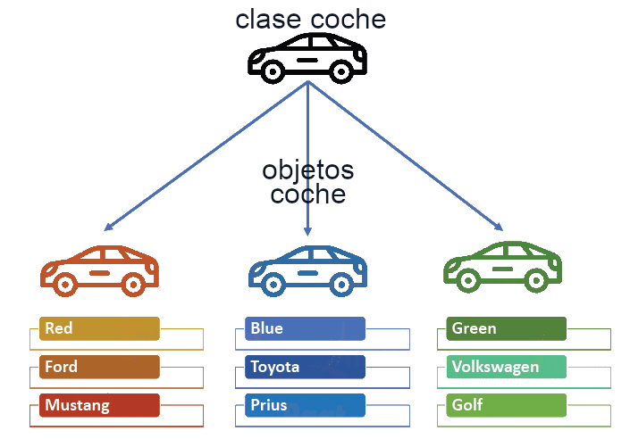
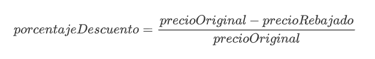
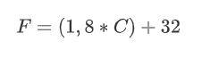
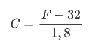

☕ UT4 — Programación Orientada a Objetos (POO): Clases y Objetos
📌 Informació Curricular de la Unitat (UT4)
Resultat d'Aprenentatge: RA2. Escribe y prueba programas sencillos, reconociendo y aplicando los fundamentos de la programación orientada a objetos. / RA4. Desarrolla programas organizados en clases.
Índex ràpid d'apartats en aquesta pàgina:
- 4.0 RA y Criterios de Evaluación — (Obrir apartat individual)
- 4.1 Introducción al paradigma orientado a objetos — (Obrir apartat individual)
- 4.2 Principios fundamentales de la POO — (Obrir apartat individual)
- 4.3 Objetos y clases — (Obrir apartat individual)
- 4.4.1 Estructura y miembros de una clase — (Obrir apartat individual)
- 4.4.2 Atributos y constantes — (Obrir apartat individual)
- 4.4.3 Métodos, parámetros y sobrecarga — (Obrir apartat individual)
- 4.4.4 Constructores y palabra clave this — (Obrir apartat individual)
- 4.4.5 Encapsulación y modificadores de visibilidad — (Obrir apartat individual)
- 4.5 Instanciación y ciclo de vida de los objetos — (Obrir apartat individual)
- 4.6 Empaquetado de clases y librerías (packages) — (Obrir apartat individual)
- Actividades prácticas UT4 — (Obrir apartat individual)
- Retos de programación UT4 — (Obrir apartat individual)
RA 2 - Escribe y prueba programas sencillos, reconociendo y aplicando los fundamentos de la programación orientada a objetos.
| Criterio de Evaluación | Apartado | Bloque de actividades |
|---|---|---|
| a) Se han identificado los fundamentos de la programación orientada a objetos. | 4.1 Introducción 4.2 Principios de la POO 4.3 Objetos y clases |
Bloque 4.0 Bloque 4.1 |
| b) Se han escrito programas simples. | A lo largo de toda la UT | Todos los bloques |
| c) Se han instanciado objetos a partir de clases predefinidas. | 4.5 Objetos 4.6 Empaquetado de clases y librerías |
Bloque 4.6 Bloque 4.8 |
| d) Se han utilizado métodos y propiedades de los objetos. | 4.4.2 Atributos 4.4.3 Métodos 4.5 Objetos |
Bloque 4.2 Bloque 4.3 Bloque 4.5 |
| e) Se han escrito llamadas a métodos estáticos. | 4.4.3 Métodos | Bloque 4.0 Bloque 4.4 Bloque 4.6 |
| f) Se han utilizado parámetros en la llamada a métodos. | 4.4.3 Métodos | Bloque 4.0 Bloque 4.4 Bloque 4.5 |
| g) Se han incorporado y utilizado librerías de objetos. | 4.6 Empaquetado de clases y librerías | Bloque 4.6 Bloque 4.8 |
| h) Se han utilizado constructores. | 4.4.4 Constructores 4.5 Objetos |
Bloque 4.0 Bloque 4.1 Bloque 4.2 Bloque 4.7 |
| i) Se ha utilizado el entorno integrado de desarrollo en la creación y compilación de programas simples. | A lo largo de toda la UT | Todos los bloques |
RA 4 - Desarrolla programas organizados en clases analizando y aplicando los principios de la programación orientada a objetos.
| Criterio de Evaluación | Apartado | Bloque de actividades |
|---|---|---|
| a) Se ha reconocido la sintaxis, estructura y componentes típicos de una clase. | 4.3 Objetos y clases 4.4.1 Estructura y miembros de una clase |
Bloque 4.0 |
| b) Se han definido clases. | 4.4.1 Estructura y miembros de una clase | Bloque 4.0 Bloque 4.1 |
| c) Se han definido propiedades y métodos. | 4.4.2 Atributos 4.4.3 Métodos |
Bloque 4.2 Bloque 4.3 |
| d) Se han creado constructores. | 4.4.4 Constructores | Bloque 4.0 Bloque 4.1 Bloque 4.7 |
| e) Se han desarrollado programas que instancien y utilicen objetos de las clases creadas anteriormente. | 4.5 Objetos | A lo largo de toda la UT |
| f) Se han utilizado mecanismos para controlar la visibilidad de las clases y de sus miembros. | 4.4.1 Estructura y miembros de una clase 4.4.2 Atributos 4.4.5 Encapsulación y visibilidad |
Bloque 4.3 Bloque 4.5 |
| h) Se han creado y utilizado métodos estáticos. | 4.4.3 Métodos | Bloque 4.0 Bloque 4.4 Bloque 4.6 |
| i) Se han creado y utilizado conjuntos y librerías de clases. | 4.6 Empaquetado de clases y librerías | Bloque 4.8 |
4.1 Introducción
Orientado a objetos hace referencia a una forma diferente de acometer la tarea del desarrollo de software, frente a otros modelos como el de la programación imperativa, la programación funcional o la programación lógica. Supone una reconsideración de los métodos de programación, de la forma de pensar en la resolución de problemas y, ante todo, de la forma de estructurar la información.
La programación orientada a objetos (POO) es un modelo para la elaboración de programas que se ha impuesto en los últimos años. Este auge se debe, en parte, a que esta forma de programar está fuertemente basada en la representación de la realidad; pero también a que refuerza el uso de buenos criterios aplicables al desarrollo de programas.
La orientación a objetos no es un tipo de lenguaje de programación. Es una metodología de trabajo para crear programas.
En POO, un programa es una colección de objetos que se relacionan entre sí de distintas formas.
Un poquito de ...
4.2 Principios de la POO
Cuando hablamos de Programación Orientada a Objetos, existen una serie de características que se deben cumplir. Cualquier lenguaje de programación orientado a objetos las debe contemplar. Las características más importantes del paradigma de la programación orientada a objetos son:
- Abstracción. Es el proceso por el cual definimos las características más importantes de un objeto, sin preocuparnos de cómo se escribirán en el código del programa, simplemente lo definimos de forma general. En la Programación Orientada a Objetos la herramienta más importante para soportar la abstracción es la clase. Básicamente, una clase es un tipo de dato que agrupa las características comunes de un conjunto de objetos.
Poder ver los objetos del mundo real que deseamos trasladar a nuestros programas, en términos abstractos, resulta de gran utilidad para un buen diseño del software, ya que nos ayuda a comprender mejor el problema y a tener una visión global de todo el conjunto. Por ejemplo, si pensamos en una clase Vehículo que agrupa las características comunes de todos ellos, a partir de dicha clase podríamos crear objetos como Coche y Camión. Entonces se dice que Vehículo es una abstracción de Coche y de Camión.
-
Modularidad. Una vez que hemos representado el escenario del problema en nuestra aplicación, tenemos como resultado un conjunto de objetos software a utilizar. Este conjunto de objetos se crean a partir de una o varias clases. Cada clase se encuentra en un archivo diferente, por lo que la modularidad nos permite modificar las características de la clase que define un objeto, sin que esto afecte al resto de clases de la aplicación.
-
Encapsulación. También llamada "ocultamiento de la información". La encapsulación o encapsulamiento es el mecanismo básico para ocultar la información de las partes internas de un objeto a los demás objetos de la aplicación. Con la encapsulación un objeto puede ocultar la información que contiene al mundo exterior, o bien restringir el acceso a la misma para evitar ser manipulado de forma inadecuada.
Por ejemplo, pensemos en un programa con dos objetos, un objeto Persona y otro Coche. Persona se comunica con el objeto Coche para llegar a su destino, utilizando para ello las acciones que Coche tenga definidas como por ejemplo conducir. Es decir, Persona utiliza Coche pero no sabe cómo funciona internamente, sólo sabe utilizar sus métodos o acciones.
-
Jerarquía. Mediante esta propiedad podemos definir relaciones de jerarquías entre clases y objetos. Las dos jerarquías más importantes son la jerarquía "es un" llamada generalización o especialización y la jerarquía "es parte de", llamada agregación. Conviene detallar algunos aspectos:
-
La generalización o especialización, también conocida como herencia, permite crear una clase nueva en términos de una clase ya existente (herencia simple) o de varias clases ya existentes (herencia múltiple).
Por ejemplo, podemos crear la clase CochedeCarreras a partir de la clase Coche, y así sólo tendremos que definir las nuevas características que tenga.
-
La agregación, también conocida como inclusión, permite agrupar objetos relacionados entre sí dentro de una clase. Así, un Coche está formado por Motor, Ruedas, Frenos y Ventanas. Se dice que Coche es una agregación y Motor, Ruedas, Frenos y Ventanas son agregados de Coche.
-
Polimorfismo. Esta propiedad indica la capacidad de que varias clases creadas a partir de una antecesora realicen una misma acción de forma diferente.
Por ejemplo, pensemos en la clase Animal y la acción de expresarse. Nos encontramos que cada tipo de Animal puede hacerlo de manera distinta, los Perros ladran, los Gatos maullan, las Personas hablamos, etc. Dicho de otra manera, el polimorfismo indica la posibilidad de tomar un objeto (de tipo Animal, por ejemplo), e indicarle que realice la acción de expresarse, esta acción será diferente según el tipo de mamífero del que se trate.
4.3 Objetos y clases

Las clases están compuestas por atributos y métodos. Una clase especifíca las características comunes de un conjunto de objetos.
De esta forma los programas que escribas estarán formados por un conjunto de clases a partir de las cuales irás creando objetos que se interrelacionarán unos con otros.
1. El concepto de objeto
Desde el comienzo del módulo llevas utilizando el concepto de objeto para desarrollar tus programas de ejemplo.
Podemos describir un objeto como una entidad que contiene información y que es capaz de realizar ciertas operaciones con esa información. Según los valores que tenga esa información el objeto tendrá un estado determinado y según las operaciones que pueda llevar a cabo con esos datos serán responsables de un comportamiento concreto.
Entre las características fundamentales de un objeto se encuentran:
- la identidad, los objetos son únicos y por tanto distinguibles entre sí, aunque pueda haber objetos exactamente iguales,
- un estado, los atributos que describen al objeto y los valores que tienen en cada momento, y
- un determinado comportamiento, acciones que se pueden realizar sobre el objeto.
Algunos ejemplos de objetos que podríamos imaginar podrían ser:
- Un coche de color rojo, marca SEAT, modelo León , del año 2021. En este ejemplo tenemos una serie de atributos, como el color (en este caso rojo), la marca, el modelo, el año, etc. Así mismo también podríamos imaginar determinadas características como la cantidad de combustible que le queda, o el número de kilómetros recorridos hasta el momento.
- Un coche de color amarillo, marca Opel, modelo Moka, del año 2019.
- Otro coche de color amarillo, marca Opel, modelo Moka y también del año 2019. Se trataría de otro objeto con las mismas propiedades que el anterior, pero sería un segundo objeto.
- Un cocodrilo de cuatro metros de longitud y de veinte años de edad.
- Un círculo de radio 2 centímetros, con centro en las coordenadas (0,0) y relleno de color amarillo.
- Un círculo de radio 3 centímetros, con centro en las coordenadas (1,2) y relleno de color verde.
Si observas los ejemplos anteriores podrás distinguir sin demasiada dificultad al menos tres familias de objetos diferentes, que no tienen nada que ver una con otra:
- Los coches.
- Los círculos.
- Los cocodrilos.
Es de suponer entonces que cada objeto tendrá determinadas posibilidades de comportamiento (acciones) dependiendo de la familia a la que pertenezcan. Por ejemplo, en el caso de los coches podríamos imaginar acciones como: arrancar, frenar, acelerar, cambiar de marcha, etc. En el caso de los cocodrilos podrías imaginar otras acciones como: desplazarse, comer, dormir, cazar, etc. Para el caso del círculo se podrían plantear acciones como: cálculo de la superficie del círculo, cálculo de la longitud de la circunferencia que lo rodea, etc.
Por otro lado, también podrías imaginar algunos atributos cuyos valores podrían ir cambiando en función de las acciones que se realizaran sobre el objeto: ubicación del coche (coordenadas), velocidad instantánea, kilómetros recorridos, velocidad media, cantidad de combustible en el depósito, etc. En el caso de los cocodrilos podrías imaginar otros atributos como: peso actual, el número de dientes actuales (irá perdiendo algunos a lo largo de su vida), el número de presas que ha cazado hasta el momento, etc.
Como puedes ver, un objeto puede ser cualquier cosa que puedas describir en términos de atributos y acciones.
Un objeto no es más que la representación de cualquier entidad concreta o abstracta que puedas percibir o imaginar y que pueda resultar de utilidad para modelar los elementos el entorno del problema que deseas resolver.
2. El concepto de clase
Está claro que dentro de un mismo programa tendrás la oportunidad de encontrar decenas, cientos o incluso miles de objetos. En algunos casos no se parecerán en nada unos a otros, pero también podrás observar que habrá muchos que tengan un gran parecido, compartiendo un mismo comportamiento y unos mismos atributos. Habrá muchos objetos que sólo se diferenciaran por los valores que toman algunos de esos atributos.
Es aquí donde entra en escena el concepto de clase. Está claro que no podemos definir la estructura y el comportamiento de cada objeto cada vez que va a ser utilizado dentro de un programa, pues la escritura del código sería una tarea interminable y redundante. La idea es poder disponer de una plantilla o modelo para cada conjunto de objetos que sean del mismo tipo, es decir, que tengan los mismos atributos y un comportamiento similar.
Una clase consiste en la definición de un tipo de objeto. Se trata de una descripción detallada de cómo van a ser los objetos que pertenezcan a esa clase indicando qué tipo de información contendrán (atributos) y cómo se podrá interactuar con ellos (comportamiento).
Como resumen, una clase consiste en un plantilla en la que se especifican:
- Los atributos que van a ser comunes a todos los objetos que pertenezcan a esa clase (información).
- Los métodos que permiten interactuar con esos objetos (comportamiento).
A partir de este momento podrás hablar ya sin confusión de objetos y de clases,sabiendo que los primeros son instancias concretas de las segundas, que no son más que una abstracción o definición.
Si nos volvemos a fijar en los ejemplos de objetos del apartado anterior podríamos observar que las clases serían lo que clasificamos como "familias" de objetos (coches, cocodrilos y círculos).
Clase vs Objeto
En el lenguaje cotidiano de muchos programadores puede ser habitual la confusión entre los términos clase y objeto. Aunque normalmente el contexto nos permite distinguir si nos estamos refiriendo realmente a una clase (definición abstracta) o a un objeto (instancia concreta), hay que tener cuidado con su uso para no dar lugar a interpretaciones erróneas, especialmente durante el proceso de aprendizaje.
Un poquito de ...
4.4.1 Estructura y miembros de una clase
En unidades anteriores ya se indicó que para declarar una clase en Java se usa la palabra reservada class. En la declaración de una clase vas a encontrar:
- Cabecera de la clase. Compuesta por una serie de modificadores de acceso, la palabra reservada
classy el nombre de la clase. - Cuerpo de la clase. En él se especifican los distintos miembros de la clase: atributos y métodos. Es decir, el contenido de la clase.
public class NombreDeLaClase [herencia] [interfaces]
{
// Atributos de la clase
...
// Métodos de la clase
...
}El cuerpo de la clase es donde se declaran los atributos que caracterizan a los objetos de la clase y donde se define e implementa el comportamiento de dichos objetos; es decir, donde se declaran e implementan los métodos.
1. Declaración de una clase
La declaración de una clase en Java tiene la siguiente estructura general:
// Cabecera de la clase
[modificadores] class <NombreClase> [herencia] [interfaces] {
// Cuerpo de la clase
// Declaración de los atributos
// Declaración de los métodos
}Un ejemplo básico pero completo podría ser:
class Punto {
// Atributos
private int x,y;
// Métodos
int obtenerX () {
return x;
}
int obtenerY() {
return y;
}
void establecerX (int nuevoX) {
x = nuevoX;
}
void establecerY (int nuevoY) {
y = nuevoY;
}
}
Math.random()En este caso se trata de una clase muy sencilla en la que el cuerpo de la clase (entre llaves) contiene el código y las declaraciones necesarias para que los objetos que se construyan (basándose en esta clase) puedan funcionar apropiadamente en un programa (declaraciones de atributos para contener el estado del objeto y métodos que implementen el comportamiento de la clase y los objetos creados a partir de ella).
Si te fijas en los distintos programas que se han desarrollado en los ejemplos de las unidades anteriores, podrás observar que cada uno de esos programas era en sí mismo una clase Java: se declaraban con la palabra reservada class y contenían algunos atributos (variables) así como algunos métodos (como mínimo el método main).
En el ejemplo anterior hemos visto lo mínimo que se tiene que indicar en la cabecera de una clase (el nombre de la clase y la palabra reservada class). Se puede proporcionar bastante más información mediante modificadores y otros indicadores como por ejemplo el nombre de su superclase (si es que esa clase hereda de otra), si implementa algún interfaz y algunas cosas más que irás aprendiendo poco a poco.
A la hora de implementar una clase Java (escribirla en un archivo con un editor de textos o con alguna herramienta integrada como por ejemplo VS Code, Netbeans o Eclipse) debes tener en cuenta:
- Por convenio, se ha decidido que en lenguaje Java los nombres de las clases deben de empezar por una letra mayúscula. Así, cada vez que observes en el código una palabra con la primera letra en mayúscula sabrás que se trata de una clase sin necesidad de tener que buscar su declaración. Además, si el nombre de la clase está formado por varias palabras, cada una de ellas también tendrá su primera letra en mayúscula. Siguiendo esta recomendación, algunos ejemplos de nombres de clases podrían ser: Recta, Circulo, Coche, CocheDeportivo, Jugador, JugadorFutbol, AnimalMarino, AnimalAcuatico, etc.
- El archivo en el que se encuentra una clase Java debe tener el mismo nombre que esa clase si queremos poder utilizarla desde otras clases que se encuentren fuera de ese archivo (clase principal del archivo).
- Tanto la definición como la implementación de una clase se incluye en el mismo archivo (archivo
.java). En otros lenguajes como por ejemplo C++, definición e implementación podrían ir en archivos separados (por ejemplo en C++, serían sendos archivos con extensiones.hy.cpp).
2. Cabecera de una clase
En general, la declaración de una clase puede incluir los siguientes elementos y en el siguiente orden:
- Modificadores tales como
public,abstractofinal. - El nombre de la clase (con la primera letra de cada palabra en mayúsculas, por convenio).
- El nombre de su clase madre (superclase), si es que se especifica, precedido por la palabra reservada
extends("extiende" o "hereda de"). - Una lista separada por comas de interfaces que son implementadas por la clase, precedida por la palabra reservada
implements("implementa"). - El cuerpo de la clase, encerrado entre llaves
{...}.
La sintaxis completa de una cabecera (los cuatro primeros puntos) queda de la forma:
[modificadores] class <NombreClase> [extends <NombreSuperClase>][implements <NombreInterface1>][[implements <NombreInterface2>] ...] {En el ejemplo anterior de la clase Punto teníamos la siguiente cabecera:
class Punto {En este caso no hay modificadores, ni indicadores de herencia, ni implementación de interfaces. Tan solo la palabra reservada class y el nombre de la clase. Es lo mínimo que puede haber en la cabecera de una clase.
La herencia y las interfaces las verás más adelante. Vamos a ver ahora cuáles son los modificadores que se pueden indicar al crear la clase y qué efectos tienen.
Los modificadores de clase son:
[public] [final | abstract]Veamos qué significado tiene cada uno de ellos:
- Modificador
public: indica que la clase es visible (se pueden crear objetos de esa clase) desde cualquier otra clase. Es decir, desde cualquier otra parte del programa. Si no se especifica este modificador, la clase sólo podrá ser utilizada desde clases que estén en el mismo paquete. El concepto de paquete lo veremos más adelante. Sólo puede haber una clase public (clase principal) en un archivo.java. El resto de clases que se definan en ese archivo no serán públicas. - Modificador
abstract: indica que la clase es abstracta. Una clase abstracta no es instanciable. Es decir, no es posible crear objetos de esa clase (habrá que utilizar clases que hereden de ella). En este momento es posible que te parezca que no tenga sentido que esto pueda suceder (si no puedes crear objetos de esa clase, ¿para qué la quieres?), pero puede resultar útil a la hora de crear una jerarquía de clases. Esto lo verás también más adelante al estudiar el concepto de herencia. - Modificador
final: indica que no podrás crear clases que hereden de ella. También volverás a este modificador cuando estudies el concepto de herencia. Los modificadores final y abstract son excluyentes (sólo se puede utilizar uno de ellos).
Todos estos modificadores y palabras reservadas las iremos viendo poco a poco, así que no te preocupes demasiado por intentar entender todas ellas en este momento.
En el ejemplo anterior de la clase Punto tendríamos una clase que sería sólo visible (utilizable) desde el mismo paquete en el que se encuentra la clase (modificador de acceso por omisión o de paquete, o package). Desde fuera de ese paquete no sería visible o accesible. Para poder utilizarla desde cualquier parte del código del programa bastaría con añadir el atributo public:
public class Punto{
...
}3. Cuerpo de una clase
Como ya has visto anteriormente, el cuerpo de una clase se encuentra encerrado entre llaves y contiene la declaración e implementación de sus miembros. Los miembros de una clase pueden ser:
- Atributos, que especifican los datos que podrá contener un objeto de la clase.
- Métodos, que implementan las acciones que se podrán realizar con un objeto de la clase.
Una clase puede no contener en su declaración atributos o métodos, pero debe de contener al menos uno de los dos (la clase no puede ser vacía*).
En el ejemplo anterior donde se definía una clase Punto, tendríamos los siguientes atributos:
- Atributo
x, de tipoint. - Atributo
y, de tipoint.
Es decir, dos valores de tipo entero. Cualquier objeto de la clase Punto que sea creado almacenará en su interior dos números enteros (x e y). Cada objeto diferente de la clase Punto contendrá sendos valores x e y, que podrán coincidir o no con el contenido de otros objetos de esa misma clase Punto.
Por ejemplo, si se han declarado varios objetos de tipo Punto:
Punto p1, p2, p3;Sabremos que cada uno de esos objetos p1, p2 y p3 contendrán un par de coordenadas (x, y) que definen el estado de ese objeto. Puede que esos valores coincidan con los de otros objetos de tipo Punto, o puede que no, pero en cualquier caso serán objetos diferentes creados a partir del mismo molde (de la misma clase).
Por otro lado, la clase Punto también definía una serie de métodos:
-
java int obtenerX () { return x; } -
java int obtenerY() { return y; } -
java void establecerX (int nuevoX) { x= nuevoX; } -
java void establecerY (int nuevoY) { y= nuevoY; }
Cada uno de esos métodos puede ser llamado desde cualquier objeto que sea una instancia de la clase Punto. Se trata de operaciones que permiten manipular los datos (atributos) contenidos en el objeto bien para calcular otros datos o bien para modificar los propios atributos.
4.4.2 Atributos
Los atributos constituyen la estructura interna de los objetos de una clase. Se trata del conjunto de datos que los objetos de una determinada clase almacenan cuando son creados. Es decir es como si fueran variables cuyo ámbito de existencia es el objeto dentro del cual han sido creadas. Fuera del objeto esas variables no tienen sentido y si el objeto deja de existir, esas variables también deberían hacerlo (proceso de destrucción del objeto). Los atributos a veces también son conocidos con el nombre de variables miembro o variables de objeto.
Los atributos pueden ser de cualquier tipo de los que pueda ser cualquier otra variable en un programa en Java: desde tipos primitivos como int, boolean o float hasta tipos referenciados como arrays, Strings u objetos.
Además del tipo y del nombre, la declaración de un atributo puede contener también algunos modificadores (como por ejemplo public, private, protected o static). Por ejemplo, en el caso de la clase Punto que habíamos definido en el aparado anterior podrías haber declarado sus atributos como:
public int x;
public int y;De esta manera estarías indicando que ambos atributos son públicos, es decir, accesibles por cualquier parte del código programa que tenga acceso a un objeto de esa clase.
Ámbito de los atributos
Como ya verás más adelante al estudiar el concepto de encapsulación, lo normal es declarar todos los atributos (o al menos la mayoría) como privados (private); de manera que si se desea acceder o manipular algún atributo se tenga que hacer a través de los métodos proporcionados por la clase.
1. Declaración de atributos
La sintaxis general para la declaración de un atributo en el interior de una clase es:
[modificadores] <tipo> <nombreAtributo>;Ejemplos:
int x;
public int elementoX, elementoY;
private int x1, y1, z1;
static double descuentoGeneral;
final boolean CASADO;
private Punto p1;Te suena bastante, ¿verdad? La declaración de los atributos en una clase es exactamente igual a la declaración de cualquier variable tal y como has estudiado en las unidades anteriores y similar a como se hace en cualquier lenguaje de programación. Es decir mediante la indicación del tipo y a continuación el nombre del atributo, pudiéndose declarar varios atributos del mismo tipo mediante una lista de nombres de atributos separada por comas (exactamente como ya has estudiado al declarar variables).
La declaración de un atributo (variable miembro o variable de objeto) consiste en la declaración de una variable que únicamente existe en el interior del objeto y por tanto su vida comenzará cuando el objeto comience a existir (el objeto sea creado). Esto significa que cada vez que se cree un objeto se crearán tantas variables como atributos contenga ese objeto en su interior (definidas en la clase, que es la plantilla o "molde" del objeto). Todas esas variables estarán encapsuladas dentro del objeto y sólo tendrán sentido dentro de él.
En el ejemplo que estamos utilizando de objetos de tipo Punto (instancias de la clase Punto), cada vez que se cree un nuevo Punto p1, se crearán sendos atributos x, y de tipo int que estarán en el interior de ese punto p1.
Si a continuación se crea un nuevo objeto Punto p2, se crearán otros dos nuevos atributos x, y de tipo int que estarán esta vez alojados en el interior de p2. Y así sucesivamente...
Dentro de la declaración de un atributo puedes encontrar tres partes:
- Modificadores. Son palabras reservadas que permiten modificar la utilización del atributo (indicar el control de acceso, si el atributo es constante, si se trata de un atributo de clase, etc.). Los iremos viendo uno a uno.
- Tipo. Indica el tipo del atributo. Puede tratarse de un tipo primitivo (
int,char,boolean,double...) o bien de uno referenciado (objeto,array, etc.). - Nombre. Identificador único para el nombre del atributo. Por convenio se suelen utilizar las minúsculas. En caso de que se trate de un identificador que contenga varias palabras, a partir de la segunda palabra se suele poner la letra de cada palabra en mayúsculas. Por ejemplo:
primerValor,valor,puertaIzquierda,cuartoTrasero,equipoVecendor,sumaTotal,nombreCandidatoFinal, etc. Cualquier identificador válido de Java será admitido como nombre de atributo válido, pero es importante seguir este convenio para facilitar la legibilidad del código (todos los programadores de Java lo utilizan).
Como puedes observar, los atributos de una clase también pueden contener modificadores en su declaración (como sucedía al declarar la propia clase). Estos modificadores permiten indicar cierto comportamiento de una tributo a la hora de utilizarlo. Entre los modificadores de un atributo podemos distinguir:
- Modificadores de acceso: Indican la forma de acceso al atributo desde otra clase. Son modificadores excluyentes entre sí. Sólo se puede poner uno.
- Modificadores de contenido: No son excluyentes. Pueden aparecer varios a la vez.
- Otros modificadores:
transientyvolatile. El primero se utiliza para indicar que un atributo es transitorio (no persistente) y el segundo es para indicar al compilador que no debe realizar optimizaciones sobre esa variable. Es más que probable que no necesites utilizarlos en este módulo.
Aquí tienes la sintaxis completa de la declaración de un atributo teniendo en cuenta la lista de todos los modificadores e indicando cuáles son incompatibles unos con otros:
[private | protected | public] [static] [final] [transient] [volatile] <tipo> <nombreAtributo>;Vamos a estudiar con detalle cada uno de ellos.
2. Modificadores de acceso
Los modificadores de acceso disponibles en Java para un atributo son:
- Modificador de acceso
public. Indica que cualquier clase (por muy ajena o lejana que sea) tiene acceso a ese atributo. No es muy habitual declarar atributos públicos (public). - Modificador de acceso
protected. En este caso se permitirá acceder al atributo desde cualquier subclase (lo verás más adelante al estudiar la herencia) de la clase en la que se encuentre declarado el atributo, y también desde las clases del mismo paquete. - Modificador de acceso por omisión (o de paquete). Si no se indica ningún modificador de acceso en la declaración del atributo, se utilizará este tipo de acceso. Se permitirá el acceso a este atributo desde todas las clases que estén dentro del mismo paquete (
package) que esta clase (la que contiene el atributo que se está declarando). No es necesario escribir ninguna palabra reservada. Si no se pone nada se supone se desea indicar este modo de acceso. - Modificador de acceso
private. Indica que sólo se puede acceder al atributo desde dentro de la propia clase. El atributo estará "oculto" para cualquier otra zona de código fuera de la clase en la que está declarado el atributo. Es lo opuesto a lo que permitepublic.
Puedes observar un resumen de los distintos niveles accesibilidad que permite cada modificador:
| modificador | Misma clase | Mismo paquete | Subclase | Otro paquete |
|---|---|---|---|---|
public |
✔ | ✔ | ✔ | ✔ |
protected |
✔ | ✔ | ✔ | ❌ |
Sin modificador (package) |
✔ | ✔ | ❌ | ❌ |
private |
✔ | ❌ | ❌ | ❌ |
Recuerda
Los modificadores de acceso son excluyentes! Sólo se puede utilizar uno de ellos en la declaración de un atributo.
3. Modificadores de contenido
Los modificadores de contenido no son excluyentes (pueden aparecer varios para un mismo atributo). Son los siguientes:
- Modificador
static: Hace que el atributo sea común para todos los objetos de una misma clase. Es decir, todos los objetos de la clase compartirán ese mismo atributo con el mismo valor. Es un caso de miembro estático o miembro de clase: un atributo estático o atributo de clase o variable de clase. - Modificador
final: Indica que el atributo es una constante. Su valor no podrá ser modificado a lo largo de la vida del objeto. Por convenio, el nombre de los atributos constantes (final) se escribe con todas las letras en mayúsculas.
En el siguiente apartado sobre atributos estáticos verás un ejemplo completo de un atributo estático (static). Veamos ahora un ejemplo de atributo constante (final).
Imagina que estás diseñando un conjunto de clases para trabajar con expresiones geométricas (figuras, superficies, volúmenes, etc.) y necesitas utilizar muy a menudo la constante pi con abundantes cifras significativas, por ejemplo, 3.14159265. Utilizar esa constante literal muy a menudo puede resultar tedioso además de poco operativo (imagina que el futuro hubiera que cambiar la cantidad de cifras significativas). La idea es declararla una sola vez, asociarle un nombre simbólico (un identificador) y utilizar ese identificador cada vez que se necesite la constante. En tal caso puede resultar muy útil declarar un atributo final con el valor 3.14159265 dentro de la clase en la que se considere oportuno utilizarla. El mejor identificador que podrías utilizar para ella será probablemente el propio nombre de la constante (y en mayúsculas, para seguir el convenio de nombres), es decir, PI.
Así podría quedar la declaración del atributo:
class claseGeometria {
// Declaración de constantes
public final float PI = 3.14159265;
...4. Atributos estáticos
Como ya has visto, el modificador static hace que el atributo sea común (el mismo) para todos los objetos de una misma clase. En este caso sí podría decirse que la existencia del atributo no depende de la existencia del objeto, sino de la propia clase y por tanto sólo habrá uno, independientemente del número de objetos que se creen. El atributo será siempre el mismo para todos los objetos y tendrá un valor único independientemente de cada objeto. Es más, aunque no exista ningún objeto de esa clase, el atributo sí existirá y podrá contener un valor (pues se trata de un atributo de la clase más que del objeto).
Uno de los ejemplos más habituales (y sencillos) de atributos estáticos o de clase es el de un contador que indica el número de objetos de esa clase que se han ido creando. Por ejemplo, en la clase de ejemplo Punto podrías incluir un atributo que fuera ese contador para llevar un registro del número de objetos de la clase Punto que se van construyendo durante la ejecución del programa.
Otro ejemplo de atributo estático (y en este caso también constante) que también se ha mencionado anteriormente al hablar de miembros estáticos era disponer de un atributo nombre, que contuviera un String con el nombre de la clase. Nuevamente ese atributo sólo tiene sentido para la clase, pues habrá de ser compartido por todos los objetos que sean de esa clase (es el nombre de la clase a la que pertenecen los objetos y por tanto siempre será la misma e igual para todos, no tiene sentido que cada objeto de tipo Punto almacene en su interior el nombre de la clase, eso lo debería hacer la propia clase).
class Punto {
// Coordenadas del punto
private int x, y;
// Atributos de clase: cantidad de puntos creados hasta el momento
public static cantidadPuntos;Obviamente, para que esto funcione como estás pensando, también habrá que escribir el código necesario para que cada vez que se cree un objeto de la clase Punto se incremente el valor del atributo cantidadPuntos.
Volverás a este ejemplo para implementar esa otra parte cuando estudies los constructores.
4.4.3 Métodos
Como ya has visto anteriormente, los métodos son las herramientas que nos sirven para definir el comportamiento de un objeto en sus interacciones con otros objetos. Forman parte de la estructura interna del objeto junto con los atributos.
En el proceso de declaración de una clase que estás estudiando ya has visto cómo escribir la cabecera de la clase y cómo especificar sus atributos dentro del cuerpo de la clase. Tan solo falta ya declarar los métodos, que estarán también en el interior del cuerpo de la clase junto con los atributos.
Orden de declaración de miembros de un objeto
Los métodos suelen declararse después de los atributos. Aunque atributos y métodos pueden aparecer mezclados por todo el interior del cuerpo de la clase es aconsejable no hacerlo para mejorar la claridad y la legibilidad del código. De ese modo, cuando echemos un vistazo rápido al contenido de una clase, podremos ver rápidamente los atributos al principio (normalmente ocuparán menos líneas de código y serán fáciles de reconocer) y cada uno de los métodos inmediatamente después.
Cada método puede ocupar un número de líneas de código más o menos grande en función de la complejidad del proceso que pretenda implementar.
Los métodos representan la interfaz de una clase. Son la forma que tienen otros objetos de comunicarse con un objeto determinado solicitándole cierta información o pidiéndole que lleve a cabo una determinada acción. Este modo de programar, como ya has visto en unidades anteriores, facilita mucho la tarea al desarrollador de aplicaciones, pues le permite abstraerse del contenido de las clases haciendo uso únicamente del interfaz (métodos).
1. Declaración de un método
La definición de un método se compone de dos partes:
- Cabecera del método, que contiene el nombre del método junto con el tipo devuelto, un conjunto de posibles modificadores y una lista de parámetros.
- Cuerpo del método, que contiene las sentencias que implementan el comportamiento del método (incluidas posibles sentencias de declaración de variables locales).
Los elementos mínimos que deben aparecer en la declaración de un método son:
- El tipo devuelto por el método.
- El nombre del método.
- Los paréntesis.
- El cuerpo del método entre llaves:
{ }.
Por ejemplo, en la clase Punto que se ha estado utilizando en los apartados anteriores podrías encontrar el siguiente método:
int obtenerX(){
// Cuerpo del método
...
}Donde:
- El tipo devuelto por el método es
int. - El nombre del método es
obtenerX. - No recibe ningún parámetro: aparece una lista vacía entre paréntesis:
( ). - El cuerpo del método es todo el código que habría encerrado entre llaves:
{ }.
Dentro del cuerpo del método podrás encontrar declaraciones de variables, sentencias y todo tipo de estructuras de control (bucles, condiciones, etc.) que has estudiado en los apartados anteriores.
Ahora bien, la declaración de un método puede incluir algunos elementos más. Vamos a estudiar con detalle cada uno de ellos.
2. Cabecera de método
La declaración de un método puede incluir los siguientes elementos:
- Modificadores (como por ejemplo los ya vistos
publicoprivate, más algunos otros que irás conociendo poco a poco). No es obligatorio incluir modificadores en la declaración. - El tipo devuelto (o tipo de retorno), que consiste en el tipo de dato (primitivo o referencia) que el método devuelve tras ser ejecutado. Si eliges
voidcomo tipo devuelto, el método no devolverá ningún valor. - El nombre del método, aplicándose para los nombres el mismo convenio que para los atributos.
- Una lista de parámetros separados por comas y entre paréntesis donde cada parámetro debe ir precedido por su tipo. Si el método no tiene parámetros la lista estará vacía y únicamente aparecerán los paréntesis.
- Una lista de excepciones que el método puede lanzar. Se utiliza la palabra reservada
throwsseguida de una lista de nombres de excepciones separadas por comas. No es obligatorio que un método incluya una lista de excepciones, aunque muchas veces será conveniente. En unidades anteriores ya has trabajado con el concepto de excepción y más adelante volverás a hacer uso de ellas. - El cuerpo del método, encerrado entre llaves. El cuerpo contendrá el código del método (una lista sentencias y estructuras de control en lenguaje Java) así como la posible declaración de variables locales.
La sintaxis general de la cabecera de un método podría entonces quedar así:
[private | protected | public] [static] [abstract] [final] [native] [synchronized] <tipo> <nombreMétodo> ( [<lista_parametros>] ) [throws <lista_excepciones>]Como sucede con todos los identificadores en Java (variables, clases, objetos, métodos, etc.) puede usarse cualquier identificador que cumpla las normas. Ahora bien, para mejorar la legibilidad del código, se ha establecido el siguiente convenio para nombrar los métodos: utilizar un verbo en minúscula o bien un nombre formado por varias palabras que comience por un verbo en minúscula, seguido por adjetivos, nombres, etc. los cuales sí aparecerán en mayúsculas.
Algunos ejemplos de métodos que siguen este convenio podrían ser: ejecutar, romper, mover, subir, responder, obtenerX, establecerValor, estaVacio, estaLleno, moverFicha, subirPalanca, responderRapido, girarRuedaIzquierda, abrirPuertaDelantera, cambiarMarcha, etc.
En el ejemplo de la clase Punto, puedes observar cómo los métodos obtenerX y obtenerY siguen el convenio de nombres para los métodos, devuelven en ambos casos un tipo int, su lista de parámetros es vacía (no tienen parámetros) y no lanzan ningún tipo de excepción:
-
java abstract int obtenerX() -
java int obtenerY()
3. Modificadores en la declaración de un método
En la declaración de un método también pueden aparecer modificadores (como en la declaración de la clase o de los atributos). Un método puede tener los siguientes tipos de modificadores:
- Modificadores de acceso. Son los mismos que en el caso de los atributos (por omisión o de paquete
package,public,privateyprotected) y tienen el mismo cometido (acceso al método sólo por parte de clases del mismo paquete, o por cualquier parte del programa, o sólo para la propia clase, o también para las subclases). - Modificadores de contenido. Son también los mismos que en el caso de los atributos (
staticyfinal) aunque su significado no es el mismo. - Otros modificadores (no son aplicables a los atributos, sólo a los métodos):
abstract,native,synchronized.
Un método static es un método cuya implementación es igual para todos los objetos de la clase y sólo tendrá acceso a los atributos estáticos de la clase (dado que se trata de un método de clase y no de objeto, sólo podrá acceder a la información de clase y no la de un objeto en particular). Este tipo de métodos pueden ser llamados sin necesidad de tener un objeto de la clase instanciado.
En Java un ejemplo típico de métodos estáticos se encuentra en la clase Math, cuyos métodos son todos estáticos (Math.abs, Math.sin, Math.cos, etc.). Como habrás podido comprobar en este ejemplo, la llamada a métodos estáticos se hace normalmente usando el nombre de la propia clase y no el de una instancia (objeto), pues se trata realmente de un método de clase. En cualquier caso, los objetos también admiten la invocación de los métodos estáticos de su clase y funcionaría correctamente.
Un método final es un método que no permite ser sobrescrito por las clases descendientes de la clase a la que pertenece el método. Volverás a ver este modificador cuando estudies en detalle la herencia.
El modificador native es utilizado para señalar que un método ha sido implementado en código nativo (en un lenguaje que ha sido compilado a lenguaje máquina, como por ejemplo C o C++). En estos casos simplemente se indica la cabecera del método, pues no tiene cuerpo escrito en Java.
Un método abstract (método abstracto) es un método que no tiene implementación (el cuerpo está vacío). La implementación será realizada en las clases descendientes. Un método sólo puede ser declarado como abstract si se encuentra dentro de una clase abstract. También volverás a este modificador en unidades posteriores cuando trabajes con la herencia.
Por último, si un método ha sido declarado como synchronized, el entorno de ejecución obligará a que cuando un proceso esté ejecutando ese método, el resto de procesos que tengan que llamar a ese mismo método deberán esperar a que el otro proceso termine. Puede resultar útil si sabes que un determinado método va a poder ser llamado concurrentemente por varios procesos a la vez. Por ahora no lo vas a necesitar.
Dada la cantidad de modificadores que has visto hasta el momento y su posible aplicación en la declaración de clases, atributos o métodos, veamos un resumen de todos los que has visto y en qué casos pueden aplicarse:
| modificador | Clase | Atributo | Método |
|---|---|---|---|
| sin modificador (package) | ✔ | ✔ | ✔ |
| public | ✔ | ✔ | ✔ |
| private | ❌ | ✔ | ✔ |
| protected | ✔ | ✔ | ✔ |
| static | ❌ | ✔ | ✔ |
| final | ✔ | ✔ | ✔ |
| synchronized | ❌ | ❌ | ✔ |
| native | ❌ | ❌ | ✔ |
| abstract | ✔ | ❌ | ✔ |
4. Parámetros en un método
La lista de parámetros de un método se coloca tras el nombre del método. Esta lista estará constituida por pares de la forma <tipoParametro> <nombreParametro>; cada uno de esos pares estará separado por comas y la lista completa estará encerrada entre paréntesis:
<tipo> nombreMetodo ( <tipo_1> <nombreParametro_1>, <tipo_2> <nombreParametro_2>, ..., <tipo_n><nombreParametro_n> )Si la lista de parámetros es vacía, tan solo aparecerán los paréntesis:
<tipo> <nombreMetodo> ( )A la hora de declarar un método, debes tener en cuenta:
- Puedes incluir cualquier cantidad de parámetros. Se trata de una decisión del programador, pudiendo ser incluso una lista vacía.
- Los parámetros podrán ser de cualquier tipo (tipos primitivos, referencias, objetos, arrays, etc.).
- No está permitido que el nombre de una variable local del método coincida con el nombre de un parámetro.
- No puede haber dos parámetros con el mismo nombre. Se produciría ambigüedad.
- Si el nombre de algún parámetro coincide con el nombre de un atributo de la clase, éste será ocultado por el parámetro. Es decir, al indicar ese nombre en el código del método estarás haciendo referencia al parámetro y no al atributo. Para poder acceder al atributo tendrás que hacer uso del operador de autorreferencia
this, que verás un poco más adelante. - El paso de parámetros es siempre por valor, excepto en el caso de los tipos referenciados (por ejemplo los objetos) en cuyo caso se está pasando efectivamente una referencia. La referencia (el objeto en sí mismo) no podrá ser cambiada pero sí elementos de su interior (atributos) a través de sus métodos o por acceso directo si se trata de un miembro público.
Es posible utilizar una construcción especial llamada varargs (argumentos variables) que permite que un método pueda tener un número variable de parámetros. Para utilizar este mecanismo se colocan unos puntos suspensivos (tres puntos: ...) después del tipo del cual se puede tener una lista variable de argumentos, un espacio en blanco y a continuación el nombre del parámetro que aglutinará la lista de argumentos variables.
<tipo><nombreMetodo> (<tipo> ... <nombre>)Es posible además mezclar el uso de varargs con parámetros fijos. En tal caso, la lista de parámetros variables debe aparecer al final (y sólo puede aparecer una).
En realidad se trata una manera transparente de pasar un array con un número variable de elementos para no tener que hacerlo manualmente. Dentro del método habrá que ir recorriendo el array para ir obteniendo cada uno de los elementos de la lista de argumentos variables.
...
void tablaMultiplicar(int n, int... nums) {
System.out.println("Tabla de multiplicar por: " + n);
for (int i=0 ; i < nums.length ; i++) {
System.out.println(nums[i] + " x " + n + " = " + (nums[i] * n));
}
}
...5. Cuerpo de un método
El interior de un método (cuerpo) está compuesto por una serie de sentencias en lenguaje Java:
- Sentencias de declaración de variables locales al método.
- Sentencias que implementan la lógica del método (estructuras de control como bucles o condiciones; utilización de métodos de otros objetos; cálculo de expresiones matemáticas, lógicas o de cadenas; creación de nuevos objetos, etc.). Es decir, todo lo que has visto en las unidades anteriores.
- Sentencia de devolución del valor de retorno (
return). Aparecerá al final del método y es la que permite devolver la información que se le ha pedido al método. Es la última parte del proceso y la forma de comunicarse con la parte de código que llamó al método (paso de mensaje de vuelta). Esta sentencia de devolución siempre tiene que aparecer al final del método. Tan solo si el tipo devuelto por el método esvoid(vacío) no debe aparecer (pues no hay que devolver nada al código llamante).
En el ejemplo de la clase Punto, tenías los métodos obtenerX y obtenerY. Veamos uno de ellos:
int obtenerX(){
return x;
}En ambos casos lo único que hace el método es precisamente devolver un valor (utilización de la sentencia return). No recibe parámetros (mensajes o información de entrada) ni hace cálculos, ni obtiene resultados intermedios o finales. Tan solo devuelve el contenido de un atributo. Se trata de uno de los métodos más sencillos que se pueden implementar: un método que devuelve el valor de un atributo. En inglés se les suele llamar métodos de tipo get, que en inglés significa obtener.
Además de esos dos métodos, la clase también disponía de otros dos que sirven para la función opuesta (establecerX y establecerX). Veamos uno de ellos:
void establecerX (int nuevoX){
x = nuevoX;
}En este caso se trata de pasar un valor al método (parámetro nuevoX de tipo int) el cual será utilizado para modificar el contenido del atributo x del objeto. Como habrás podido comprobar, ahora no se devuelve ningún valor (el tipo devuelto es void y no hay sentencia return). En inglés se suele hablar de métodos de tipo set, que en inglés significa poner o fijar (establecer un valor). El método establecerY es prácticamente igual pero para establecer el valor del atributo y.
Normalmente el código en el interior de un método será algo más complejo y estará formado un conjunto de sentencias en las que se realizarán cálculos, se tomarán decisiones, se repetirán acciones, etc. Puedes ver un ejemplo más completo en el siguiente ejercicio.
6. La referencia this
La palabra reservada this consiste en una referencia al objeto actual. El uso de este operador puede resultar muy útil a la hora de evitar la ambigüedad que puede producirse entre el nombre de un parámetro de un método y el nombre de un atributo cuando ambos tienen el mismo identificador (mismo nombre). En tales casos el parámetro "oculta" al atributo y no tendríamos acceso directo a él (al escribir el identificador estaríamos haciendo referencia al parámetro y no al atributo). En estos casos la referencia this nos permite acceder a estos atributos ocultados por los parámetros.
Dado que this es una referencia a la propia clase en la que te encuentras en ese momento, puedes acceder a sus atributos mediante el operador punto (.) como sucede con cualquier otra clase u objeto. Por tanto, en lugar deponer el nombre del atributo (que estos casos haría referencia al parámetro), podrías escribir this.nombreAtributo, de manera que el compilador sabrá que te estás refiriendo al atributo y se eliminará la ambigüedad.
En el ejemplo de la clase Punto, podríamos utilizar la referencia this si el nombre del parámetro del método coincidiera con el del atributo que se desea modificar. Por ejemplo:
class Punto{
private int x,y;
void establecerX (int nuevaX){
x = 1; //<<<--- metodo
this.x = 1; //<<<--- clase
this.x = x;
this.x = nuevaX;
}
}En este caso ha sido indispensable el uso de this, pues si no sería imposible saber en qué casos te estás refiriendo al parámetro x y en cuáles al atributo x. Para el compilador el identificador x será siempre el parámetro, pues ha "ocultado" al atributo.
Uso de this
En algunos casos puede resultar útil hacer uso de la referencia this aunque no sea necesario, pues puede ayudar a mejorar la legibilidad del código.
7. Sobrecarga de métodos
En principio podrías pensar que un método puede aparecer una sola vez en la declaración de una clase (no se debería repetir el mismo nombre para varios métodos). Pero no tiene porqué siempre suceder así. Es posible tener varias versiones de un mismo método (varios métodos con el mismo nombre) gracias a la sobrecarga de métodos.
El lenguaje Java soporta la característica conocida como sobrecarga de métodos. Ésta permite declarar en una misma clase varias versiones del mismo método con el mismo nombre. La forma que tendrá el compilador de distinguir entre varios métodos que tengan el mismo nombre será mediante la lista de parámetros del método: si el método tiene una lista de parámetros diferente, será considerado como un método diferente (aunque tenga el mismo nombre) y el analizador léxico no producirá un error de compilación al encontrar dos nombres de método iguales en la misma clase.
Imagínate que estás desarrollando una clase para escribir sobre un lienzo que permite utilizar diferentes tipografías en función del tipo de información que se va a escribir. Es probable que necesitemos un método diferente según se vaya a pintar un número entero (int), un número real (double) o una cadena de caracteres (String). Una primera opción podría ser definir un nombre de método diferente dependiendo de lo que se vaya a escribir en el lienzo. Por ejemplo:
- Método
pintarEntero (int entero). - Método
pintarReal (double real). - Método
pintarCadena (double String). - Método
pintarEnteroCadena (int entero, String cadena).
Y así sucesivamente para todos los casos que desees contemplar...
La posibilidad que te ofrece la sobrecarga es utilizar un mismo nombre para todos esos métodos (dado que en el fondo hacen lo mismo: pintar). Pero para poder distinguir unos de otros será necesario que siempre exista alguna diferencia entre ellos en las listas de parámetros (bien en el número de parámetros, bien en el tipo de los parámetros). Volviendo al ejemplo anterior, podríamos utilizar un mismo nombre, por ejemplo pintar, para todos los métodos anteriores:
- Método
pintar (int entero). - Método
pintar (double real). - Método
pintar (double String). - Método
pintar (int entero, String cadena).
En este caso el compilador no va a generar ningún error pues se cumplen las normas ya que unos métodos son perfectamente distinguibles de otros (a pesar de tener el mismo nombre) gracias a que tienen listas de parámetros diferentes.
Lo que sí habría producido un error de compilación habría sido por ejemplo incluir otro método pintar (int entero), pues es imposible distinguirlo de otro método con el mismo nombre y con la misma lista de parámetros (ya existe un método pintar con un único parámetro de tipo int).
También debes tener en cuenta que el tipo devuelto por el método no es considerado a la hora de identificar un método, así que un tipo devuelto diferente no es suficiente para distinguir un método de otro. Es decir, no podrías definir dos métodos exactamente iguales en nombre y lista de parámetros e intentar distinguirlos indicando un tipo devuelto diferente. El compilador producirá un error de duplicidad en el nombre del método y no te lo permitirá.
Uso moderado de la sobrecarga
Es conveniente no abusar de sobrecarga de métodos y utilizarla con cierta moderación (cuando realmente puede beneficiar su uso), dado que podría hacer el código menos legible.
8. Sobrecarga de operadores
Del mismo modo que hemos visto la posibilidad de sobrecargar métodos (disponer de varias versiones de un método con el mismo nombre cambiando su lista de parámetros), podría plantearse también la opción de sobrecargar operadores del lenguaje tales como +, - , *, ( ), <, >, etc. para darles otro significado dependiendo del tipo de objetos con los que vaya a operar.
En algunos casos puede resultar útil para ayudar a mejorar la legibilidad del código, pues esos operadores resultan muy intuitivos y pueden dar una idea rápida de cuál es su funcionamiento.
Un típico ejemplo podría ser el de la sobrecarga de operadores aritméticos como la suma (+) o el producto (*) para operar con fracciones. Si se definen objetos de una clase Fraccion (que contendrá los atributos numerador y denominador) podrían sobrecargarse los operadores aritméticos (habría que redefinir el operador suma (+) para la suma, el operador asterisco (*) para el producto, etc.) para esta clase y así podrían utilizarse para sumar o multiplicar objetos de tipo Fraccion mediante el algoritmo específico de suma o de producto del objeto Fraccion (pues esos operadores no están preparados en el lenguaje para operar con esos objetos).
En algunos lenguajes de programación como por ejemplo C++ o C# se permite la sobrecarga, pero no es algo soportado en todos los lenguajes. ¿Qué sucede en el caso concreto de Java?
Sobrecarga de operadores en Java
El lenguaje Java NO soporta la sobrecarga de operadores.
En el ejemplo anterior de los objetos de tipo Fracción, habrá que declarar métodos en la clase Fraccion que se encarguen de realizar esas operaciones, pero no lo podremos hacer sobrecargando los operadores del lenguaje (los símbolos de la suma, resta, producto, etc.). Por ejemplo:
public Fraccion sumar (Fraccion sumando)
public Fraccion multiplicar (Fraccion multiplicando)Y así sucesivamente...
Dado que en este módulo se está utilizando el lenguaje Java para aprender a programar, no podremos hacer uso de esta funcionalidad. Más adelante, cuando aprendas a programar en otros lenguajes, es posible que sí tengas la posibilidad de utilizar este recurso.
9. Métodos estáticos
Como ya has visto en ocasiones anteriores, un método estático es un método que puede ser usado directamente desde la clase, sin necesidad de tener que crear una instancia para poder utilizar al método. También son conocidos como métodos de clase (como sucedía con los atributos de clase), frente a los métodos de objeto (es necesario un objeto para poder disponer de ellos).
Los métodos estáticos no pueden manipular atributos de instancias (objetos) sino atributos estáticos (de clase) y suelen ser utilizados para realizar operaciones comunes a todos los objetos de la clase, más que para una instancia concreta.
Algunos ejemplos de operaciones que suelen realizarse desde métodos estáticos:
- Acceso a atributos específicos de clase: incremento o decremento de contadores internos de la clase (
no de instancias), acceso a un posible atributo de nombre de la clase, etc. - Operaciones genéricas relacionadas con la clase pero que no utilizan atributos de instancia. Por ejemplo una clase
NIF(oDNI) que permite trabajar con elDNIy la letra delNIFy que proporciona funciones adicionales para calcular la letraNIFde un número deDNIque se le pase como parámetro. Ese método puede ser interesante para ser usado desde fuera de la clase de manera independiente a la existencia de objetos de tipoNIF.
En la biblioteca de Java es muy habitual encontrarse con clases que proporcionan métodos estáticos que pueden resultar muy útiles para cálculos auxiliares, conversiones de tipos, etc. Por ejemplo, la mayoría de las clases del paquete java.lang que representan tipos (Integer, String, Float, Double, Boolean, etc.) ofrecen métodos estáticos para hacer conversiones. Aquí tienes algunos ejemplos:
java static String valueOf(int i)
Devuelve la representación en formato String (cadena) de un valor int. Se trata de un método que no tiene que ver nada en absoluto con instancias de concretas de String, sino de un método auxiliar que puede servir como herramienta para ser usada desde otras clases. Se utilizaría directamente con el nombre de la clase. Por ejemplo:
-
java String enteroCadena = String.valueOf(23); -
java static String valueOf(float f)
Algo similar para un valor de tipo float. Ejemplo de uso:
-
java String floatCadena = String.valueOf(24.341); -
java static int parseInt(String s)
En este caso se trata de un método estático de la clase Integer. Analiza la cadena pasada como parámetro y la transforma en un int. Ejemplo de uso:
java int cadenaEntero=Integer.parseInt ("‐12");
Todos los ejemplos anteriores son casos en los que se utiliza directamente la clase como una especie de caja de herramientas que contiene métodos que pueden ser utilizados desde cualquier parte, por eso suelen ser métodos públicos.
4.4.4 Constructores
El ciclo de vida de un objeto se pueden distinguir las fases de:
- Construcción del objeto.
- Manipulación y utilización del objeto accediendo a sus miembros.
- Destrucción del objeto.
Como has visto en el apartado anterior, durante la fase de construcción o instanciación de un objeto es cuando se reserva espacio en memoria para sus atributos y se inicializan algunos de ellos. Un constructor es un método especial con el mismo nombre de la clase y que se encarga de realizar este proceso.
El proceso de declaración y creación de un objeto mediante el operador new ya ha sido estudiado en apartados anteriores. A lo largo de las unidades anteriores hemos creado clases que tenían constructor por defecto y también constructores implementados por nosotros mismos.
Los métodos constructores se encargan de llevar a cabo el proceso de creación o construcción de un objeto.
1. Concepto de constructor
Un constructor es un método que tiene el mismo nombre que la clase a la que pertenece y que no devuelve ningún valor tras su ejecución. Su función es la de proporcionar el mecanismo de creación de instancias (objetos) de la clase.
Cuando un objeto es declarado, en realidad aún no existe. Tan solo se trata de un nombre simbólico (una variable) que en el futuro hará referencia a una zona de memoria que contendrá la información que representa realmente a un objeto. Para que esa variable de objeto aún "vacía" (se suele decir que es una referencia nula o vacía) apunte, o haga referencia a una zona de memoria que represente a una instancia de clase (objeto) existente, es necesario "construir" el objeto. Ese proceso se realizará a través del método constructor de la clase. Por tanto para crear un nuevo objeto es necesario realizar una llamada a un método constructor de la clase a la que pertenece ese objeto.
Ese proceso se realiza mediante la utilización del operador new.
Hasta el momento ya has utilizado en numerosas ocasiones el operador new para instanciar o crear objetos. En realidad lo que estabas haciendo era una llamada al constructor de la clase para que reservara memoria para ese objeto y por tanto "crear" físicamente el objeto en la memoria (dotarlo de existencia física dentro de la memoria del ordenador). Dado que en esta unidad estás ya definiendo tus propias clases, parece que ha llegado el momento de que empieces a escribir también los constructores de tus clases.
Por otro lado, si un constructor es al fin y al cabo una especie de método (aunque algo especial) y Java soporta la sobrecarga de métodos, podrías plantearte la siguiente pregunta: ¿podrá una clase disponer de más de constructor? En otras palabras, ¿será posible la sobrecarga de constructores? La respuesta es afirmativa.
Número de constructores en las clases
Una misma clase puede disponer de varios constructores. Los constructores soportan la sobrecarga.
Es necesario que toda clase tenga al menos un constructor. Si no se define ningún constructor en una clase, el compilador creará por nosotros un constructor por defecto vacío que se encarga de inicializar todos los atributos a sus valores por defecto (0 para los numéricos, null para las referencias, false para los boolean, etc.).
Algunas analogías que podrías imaginar para representar el constructor de una clase podrían ser:
- Los moldes de cocina para flanes, galletas, pastas, etc.
- Un cubo de playa para crear castillos de arena.
- Un molde de un lingote de oro.
- Una bolsa para hacer cubitos de hielo.
2. Creación de constructores
Cuando se escribe el código de una clase normalmente se pretende que los objetos de esa clase se creen de una determinada manera. Para ello se definen uno o más constructores en la clase. En la definición de un constructor se indican:
- El tipo de acceso.
- El nombre de la clase (el nombre de un método constructor es siempre el nombre de la propia clase).
- La lista de parámetros que puede aceptar.
- Si lanza o no excepciones.
- El cuerpo del constructor (un bloque de código como el de cualquier método).
Como puedes observar, la estructura de los constructores es similar a la de cualquier método, con las excepciones de que no tiene tipo de dato devuelto (no devuelve ningún valor) y que el nombre del método constructor debe ser obligatoriamente el nombre de la clase.
Desaparición del método constructor por defecto
Si defines constructores personalizados para una clase, el constructor por defecto (sin parámetros) para esa clase deja de ser generado por el compilador, de manera que tendrás que crearlo tú si quieres poder utilizarlo.
Si se ha creado un constructor con parámetros y no se ha implementado el constructor por defecto, el intento de utilización del constructor por defecto producirá un error de compilación (el compilador no lo hará por nosotros).
Un ejemplo de constructor para la clase Punto podría ser:
public Punto(int x, int y) {
this.x= x;
this.y= y;
cantidadPuntos++; // Suponiendo que tengamos un atributo estático cantidadPuntos
}En este caso el constructor recibe dos parámetros. Además de reservar espacio para los atributos (de lo cual se encarga automáticamente Java), también asigna sendos valores iniciales a los atributos x e y. Por último incrementa un atributo (probablemente estático) llamado cantidadPuntos.
3. Utilización de constructores
Una vez que dispongas de tus propios constructores personalizados, la forma de utilizarlos es igual que con el constructor por defecto (mediante la utilización de la palabra reservada new) pero teniendo en cuenta que si has declarado parámetros en tu método constructor, tendrás que llamar al constructor con algún valor para esos parámetros.
Un ejemplo de utilización del constructor que has creado para la clase Punto en el apartado anterior podría ser:
Punto p1;
p1 = new Punto(10, 7);o declaración e instanciación en la misma línea de código:
Punto p1 = new Punto(10, 7);En este caso no se estaría utilizando el constructor por defecto sino el constructor que acabas de implementar en el cual además de reservar memoria se asigna un valor a algunos de los atributos.
4. Constructores de copia
Una forma de iniciar un objeto podría ser mediante la copia de los valores de los atributos de otro objeto ya existente. Imagina que necesitas varios objetos iguales (con los mismos valores en sus atributos) y que ya tienes uno de ellos perfectamente configurado (sus atributos contienen los valores que tú necesitas). Estaría bien disponer de un constructor que hiciera copias idénticas de ese objeto.
Durante el proceso de creación de un objeto puedes generar objetos exactamente iguales (basados en la misma clase) que se distinguirán posteriormente porque podrán tener estados distintos (valores diferentes en los atributos). La idea es poder decirle a la clase que además de generar un objeto nuevo, que lo haga con los mismos valores que tenga otro objeto ya existente. Es decir, algo así como si pudieras clonar el objeto tantas veces como te haga falta. A este tipo de mecanismo se le suele llamar constructor copia o constructor de copia.
Un constructor copia es un método constructor como los que ya has utilizado pero con la particularidad de que recibe como parámetro una referencia al objeto cuyo contenido se desea copiar. Este método revisa cada uno de los atributos del objeto recibido como parámetro y se copian todos sus valores en los atributos del objeto que se está creando en ese momento en el método constructor.
Un ejemplo de constructor copia para la clase Punto podría ser:
public Punto(Punto p){
this.x = p.obtenerX();
this.y = p.obtenerY();
}En este caso el constructor recibe como parámetro un objeto del mismo tipo que el que va a ser creado (clase Punto), inspecciona el valor de sus atributos (atributos x e y), y los reproduce en los atributos del objeto en proceso de construcción (this).
Un ejemplo de utilización de ese constructor podría ser:
Punto p1, p2;
p1 = new Punto (10, 7);
p2 = new Punto (p1);En este caso el objeto p2 se crea a partir de los valores del objeto p1.
5. Destrucción de objetos
Como ya has estudiado en unidades anteriores, cuando un objeto deja de ser utilizado, los recursos usados por él (memoria, acceso a archivos, conexiones con bases de datos, etc.) deberían de ser liberados para que puedan volver a ser utilizados por otros procesos (mecanismo de destrucción del objeto).
Mientras que de la construcción de los objetos se encargan los métodos constructores, de la destrucción se encarga un proceso del entorno de ejecución conocido como recolector de basura (garbage collector). Este proceso va buscando periódicamente objetos que ya no son referenciados (no hay ninguna variable que haga referencia a ellos) y los marca para ser eliminados. Posteriormente los irá eliminando de la memoria cuando lo considere oportuno (en función de la carga del sistema, los recursos disponibles, etc.).
Normalmente se suele decir que en Java no hay método destructor y que en otros lenguajes orientados a objetos como C++, sí se implementa explícitamente el destructor de una clase de la misma manera que se define el constructor. En realidad en Java también es posible implementar el método destructor de una clase, se trata del método finalize().
Este método finalize es llamado por el recolector de basura cuando va a destruir el objeto (lo cual nunca se sabe cuándo va a suceder exactamente, pues una cosa es que el objeto sea marcado para ser borrado y otra que sea borrado efectivamente). Si ese método no existe, se ejecutará un destructor por defecto (el método finalize que contiene la clase Object, de la cual heredan todas las clases en Java) que liberará la memoria ocupada por el objeto. Se recomienda por tanto que si un objeto utiliza determinados recursos de los cuales no tienes garantía que el entorno de ejecución los vaya a liberar (cerrar archivos, cerrar conexiones de red, cerrar conexiones con bases de datos, etc.), implementes explícitamente un método finalize en tus clases. Si el único recurso que utiliza tu clase es la memoria necesaria para albergar sus atributos, eso sí será liberado sin problemas. Pero si se trata de algo más complejo, será mejor que te encargues tú mismo de hacerlo implementando tu destructor personalizado (finalize).
Por otro lado, esta forma de funcionar del entorno de ejecución de Java (destrucción de objetos no referenciados mediante el recolector de basura) implica que no puedas saber exactamente cuándo un objeto va a ser definitivamente destruido, pues si una variable deja de ser referenciada (se cierra el ámbito de ejecución donde fue creada) no implica necesariamente que sea inmediatamente borrada, sino que simplemente es marcada para que el recolector la borre cuando pueda hacerlo.
Si en un momento dado fuera necesario garantizar que el proceso de finalización (método finalize) sea invocado, puedes recurrir al método runFinalization() de la clase System para forzarlo:
System.runFinalization ();Este método se encarga de llamar a todos los métodos finalize de todos los objetos marcados por el recolector de basura para ser destruidos.
Si necesitas implementar un destructor (normalmente no será necesario), debes tener en cuenta que:
- El nombre del método destructor debe ser
finalize(). - No puede recibir parámetros.
- Sólo puede haber un destructor en una clase. No es posible la sobrecarga dado que no tiene parámetros.
- No puede devolver ningún valor. Debe ser de tipo
void.
Ejemplo:
protected void finalize() throws Throwable{
System.out.println("Finalizando el Objeto");
// si la superclase también tiene un destructor...
super.finalize();
}4.4.5 Encapsulación y visibilidad
Dentro de la Programación Orientada a Objetos ya has visto que es muy importante el concepto de ocultación, la cual ha sido lograda gracias a la encapsulación de la información dentro de las clases. De esta manera una clase puede ocultar parte de su contenido o restringir el acceso a él para evitar que sea manipulado de manera inadecuada. Los modificadores de acceso en Java permiten especificar el ámbito de visibilidad de los miembros de una clase, proporcionando así un mecanismo de accesibilidad a varios niveles.
Acabas de estudiar que cuando se definen los miembros de una clase (atributos o métodos), e incluso la propia clase, se indica (aunque sea por omisión) un modificador de acceso. En función de la visibilidad que se desee que tengan los objetos o los miembros de esos objetos se elegirá alguno de los modificadores de acceso que has estudiado. Ahora que ya sabes cómo escribir una clase completa (declaración de la clase, declaración de sus atributos y declaración de sus métodos), vamos a hacer un repaso general de las opciones de visibilidad (control de acceso) que has estudiado.
Los modificadores de acceso determinan si una clase puede utilizar determinados miembros (acceder a atributos o invocar miembros) de otra clase. Existen dos niveles de control de acceso:
- A nivel general (nivel de clase): visibilidad de la propia clase.
- A nivel de miembros: especificación, miembro por miembro, de su nivel de visibilidad.
En el caso de la clase, ya estudiaste que los niveles de visibilidad podían ser:
- Público (modificador
public), en cuyo caso la clase era visible a cualquier otra clase (cualquier otro fragmento de código del programa). - Privada al paquete (
package)(sin modificador o modificador "por omisión"). En este caso, la clase sólo será visible a las demás clases del mismo paquete, pero no al resto del código del programa (otros paquetes). - (protected), lo podrán ver las clases del mismo paquete y también las clases herederas.
En el caso de los miembros, disponías de una posibilidad más de niveles de accesibilidad, teniendo un total de cuatro opciones a la hora de definir el control de acceso al miembro:
- Público (modificador
public), igual que en el caso global de la clase y con el mismo significado (miembro visible desde cualquier parte del código). - Del paquete (sin modificador), también con el mismo significado que en el caso de la clase (miembro visible sólo desde clases del mismo paquete, ni siquiera será visible desde una subclase salvo si ésta está en el mismo paquete).
- Privado (modificador
private), donde sólo la propia clase tiene acceso al miembro. - Protegido (modificador
protected), lo podrán ver las clases del mismo paquete y también las clases herederas.
1. Ocultación de atributos. Métodos de acceso
Los atributos de una clase suelen ser declarados como privados a la clase o, como mucho, protected (accesibles también por clases heredadas), pero no como public. De esta manera puedes evitar que sean manipulados inadecuadamente (por ejemplo modificarlos sin ningún tipo de control) desde el exterior del objeto.
En estos casos lo que se suele hacer es declarar esos atributos como privados o protegidos y crear métodos públicos que permitan acceder a esos atributos. Si se trata de un atributo cuyo contenido puede ser observado pero no modificado directamente, puede implementarse un método de "obtención" del atributo (en inglés se les suele llamar método de tipo get) y si el atributo puede ser modificado, puedes también implementar otro método para la modificación o "establecimiento" del valor del atributo (en inglés se le suele llamar método de tipo set). Esto ya lo has visto en apartados anteriores.
Si recuerdas la clase Punto que hemos utilizado como ejemplo, ya hiciste algo así con los métodos de obtención y establecimiento de las coordenadas:
private int x, y;
// Métodos get
public int obtenerX() {
return x;
}
public int obtenerY() {
return y;
}
// Métodos set
public void establecerX(int x) {
this.x = x;
}
public void establecerY(int y) {
this.y = y;
}Así, para poder obtener el valor del atributo x de un objeto de tipo Punto será necesario utilizar el método obtenerX() y no se podrá acceder directamente al atributo x del objeto.
En algunos casos los programadores directamente utilizan nombres en inglés para nombrar a estos métodos:
getX(), getY(), setX(), setY(), getNombre, setNombre, getColor, etc.También pueden darse casos en los que no interesa que pueda observarse directamente el valor de un atributo, sino un determinado procesamiento o cálculo que se haga con el atributo (pero no el valor original). Por ejemplo podrías tener un atributo DNI que almacene los 8 dígitos del DNI pero no la letra del NIF (pues se puede calcular a partir de los dígitos). El método de acceso para el DNI (método getDNI) podría proporcionar el DNI completo (es decir, el NIF, incluyendo la letra), mientras que la letra no es almacenada realmente en el atributo del objeto. Algo similar podría suceder con el dígito de control de una cuenta bancaria, que puede no ser almacenado en el objeto, pero sí calculado y devuelto cuando se nos pide el número de cuenta completo.
En otros casos puede interesar disponer de métodos de modificación de un atributo pero a través de un determinado procesamiento previo para, por ejemplo, poder controlar errores o valores inadecuados. Volviendo al ejemplo del NIF, un método para modificar un DNI (método setDNI) podría incluir la letra (NIF completo), de manera que así podría comprobarse si el número de DNI y la letra coinciden (es un NIF válido). En tal caso se almacenará el DNI y en caso contrario se producirá un error de validación (por ejemplo lanzando una excepción). En cualquier caso, el DNI que se almacenara sería solamente el número y no la letra (pues la letra es calculable a partir del número de DNI).
2. Ocultación de métodos
Normalmente los métodos de una clase pertenecen a su interfaz y por tanto parece lógico que sean declarados como públicos. Pero también es cierto que pueden darse casos en los que exista la necesidad de disponer de algunos métodos privados a la clase. Se trata de métodos que realizan operaciones intermedias o auxiliares y que son utilizados por los métodos que sí forman parte de la interfaz. Ese tipo de métodos (de comprobación, de adaptación de formatos, de cálculos intermedios, etc.) suelen declararse como privados pues no son de interés (o no es apropiado que sean visibles) fuera del contexto del interior del objeto.
En el ejemplo anterior de objetos que contienen un DNI, será necesario calcular la letra correspondiente a un determinado número de DNI o comprobar si una determinada combinación de número y letra forman un DNI válido. Este tipo de cálculos y comprobaciones podrían ser implementados en métodos privados de la clase (o al menos como métodos protegidos).
4.5 Objetos
Una vez que ya tienes implementada una clase con todos sus atributos y métodos, ha llegado el momento de utilizarla, es decir, de instanciar objetos de esa clase e interaccionar con ellos. En unidades anteriores ya has visto cómo declarar un objeto de una clase determinada, instanciarlo con el operador new y utilizar sus métodos y atributos.
1. Declaración de un objeto
Como ya has visto en unidades anteriores, la declaración de un objeto se realiza exactamente igual que la declaración de una variable de cualquier tipo:
<tipo> nombreVariable;En este caso el tipo será alguna clase que ya hayas implementado o bien alguna de las proporcionadas por la biblioteca de Java o por alguna otra biblioteca escrita por terceros.
Por ejemplo:
Punto p1;
Rectangulo r1, r2;
Coche cocheAntonio;
String palabra;Esas variables (p1, r1, r2, cocheAntonio, palabra) en realidad son referencias (también conocidas como punteros o direcciones de memoria) que apuntan (hacen "referencia") a un objeto (una zona de memoria) de la clase indicada en la declaración.
Como ya estudiaste en la unidad dedicada a los objetos, un objeto recién declarado (referencia recién creada) no apunta a nada. Se dice que la referencia está vacía o que es una referencia nula (la variable objeto contiene el valor null). Es decir, la variable existe y está preparada para guardar una dirección de memoria que será la zona donde se encuentre el objeto al que hará referencia, pero el objeto aún no existe (no ha sido creado o instanciado). Por tanto se dice que apunta a un objeto nulo o inexistente.
Para que esa variable (referencia) apunte realmente a un objeto (contenga una referencia o dirección de memoria que apunte a una zona de memoria en la que se ha reservado espacio para un objeto) es necesario crear o instanciar el objeto. Para ello se utiliza el operador new.
2. Creación de un objeto
Para poder crear un objeto (instancia de una clase) es necesario utilizar el operador new, el cual tiene la siguiente sintaxis:
nombreObjeto= new <ConstructorClase> ([listaParametros]);El constructor de una clase (<ConstructorClase>) es un método especial que tiene toda clase y cuyo nombre coincide con el de la clase. Es quien se encarga de crear o construir el objeto, solicitando la reserva de memoria necesaria para los atributos e inicializándolos a algún valor si fuera necesario.
Dado que el constructor es un método más de la clase, podrá tener también su lista de parámetros como tienen todos los métodos.
De la tarea de reservar memoria para la estructura del objeto (sus atributos más alguna otra información de carácter interno para el entorno de ejecución) se encarga el propio entorno de ejecución de Java. Es decir, que por el hecho de ejecutar un método constructor, el entorno sabrá que tiene que realizar una serie de tareas (solicitud de una zona de memoria disponible, reserva de memoria para los atributos, enlace de la variable objeto a esa zona, etc.) y se pondrá rápidamente a desempeñarlas.
Cuando escribas el código de una clase no es necesario que implementes el método constructor si no quieres hacerlo. Java se encarga de dotar de un constructor por omisión (también conocido como constructor por defecto) a toda clase. Ese constructor por omisión se ocupará exclusivamente de las tareas de reserva de memoria. Si deseas que el constructor realice otras tareas adicionales, tendrás que escribir el constructor tú mismo; y también el constructor por defecto. El constructor por omisión no tiene parámetros.
Constructor por defecto implícito
El constructor por defecto no se ve en el código de una clase. Lo incluirá el compilador de Java al compilar la clase si descubre que no se ha creado ningún método constructor para esa clase.
Algunos ejemplos de instanciación o creación de objetos podrían ser:
p1 = new Punto();
r1 = new Rectangulo();
r2 = new Rectangulo;
cocheAntonio = new Coche();
palabra = new String; //palabra = new String("");
En el caso de los constructores, si éstos no tienen parámetros, pueden omitirse los paréntesis vacíos.
Un objeto puede ser declarado e instanciado en la misma línea. Por ejemplo:
Punto p1 = new Punto();3. Manipulación de un objeto: utilización de métodos y atributos
Una vez que un objeto ha sido declarado y creado (clase instanciada) ya sí se puede decir que el objeto existe en el entorno de ejecución, y por tanto que puede ser manipulado como un objeto más en el programa, haciéndose uso de sus atributos y sus métodos.
Para acceder a un miembro de un objeto se utiliza el operador punto (.) del siguiente modo:
<nombreObjeto>.<nombreMiembro>Donde <nombreMiembro> será el nombre de algún miembro del objeto (atributo o método) al cual se tenga acceso.
Por ejemplo, en el caso de los objetos de tipo Punto que has declarado e instanciado en los apartados anteriores, podrías acceder a sus miembros de la siguiente manera:
Punto p1, p2, p3;
p1= new Punto();
p1.x= 5;
p1.y= 6;
System.out.printf ("p1.x: %d\np1.y: %d\n", p1.x, p1.y);
System.out.printf ("p1.x: %d\np1.y: %d\n", p1.obtenerX(), p1.obtenerY());
p1.establecerX(25);
p1.establecerX(30);
System.out.printf ("p1.x: %d\np1.y: %d\n", p1.obtenerX(), p1.obtenerY());Es decir, colocando el operador punto (.) a continuación del nombre del objeto y seguido del nombre del miembro al que se desea acceder.
4.6 Empaquetado de clases y librerías
Conforme nuestros programas se van haciendo más grandes, el número de clases va creciendo. Introducir todas las clases en un único directorio no ayuda a que estén bien organizadas, lo mejor es hacer grupos de clases, de forma que todas las clases que estén relacionadas o traten sobre un mismo tema estén en el mismo grupo.
Un paquete de clases es una agrupación de clases que consideramos que están relacionadas entre sí o tratan de un tema común.
Acceso a métodos de un mismo paquete
Las clases de un mismo paquete tienen un acceso privilegiado a los atributos y métodos de otras clases de dicho paquete. Es por ello por lo que se considera que los paquetes son también, en cierto modo, unidades de encapsulación y ocultación de información.
Java nos ayuda a organizar las clases en paquetes. En cada fichero .java que hagamos, al principio, podemos indicar a qué paquete pertenece la clase que hagamos en ese fichero.
Los paquetes se declaran utilizando la palabra clave package seguida del nombre del paquete.
Para establecer el paquete al que pertenece una clase hay que poner una sentencia de declaración como la siguiente al principio de la clase:
package Nombre_de_Paquete;Por ejemplo, si decidimos agrupar en un paquete ejemplos un programa llamado Bienvenida, pondríamos en nuestro fichero Bienvenida.java lo siguiente:
package ejemplos;
public class Bienvenida {
[...]
}El código es exactamente igual que como hemos venido haciendo hasta ahora, solamente hemos añadido la línea package ejemplos; al principio.
Sentencia import
Cuando queremos utilizar una clase que está en un paquete distinto a la clase que estamos utilizando, se suele utilizar la sentencia import. Por ejemplo, si queremos utilizar la clase Scanner que está en el paquete java.util de la Biblioteca de Clases de Java, tendremos que utilizar esta sentencia:
import java.util.Scanner;Se pueden importar todas las clases de un paquete, así:
import java.awt.*;Esta sentencia debe aparecer al principio de la clase, justo después de la sentencia package, si ésta existiese.
También podemos utilizar la clase sin sentencia import, en cuyo caso cada vez que queramos usarla debemos indicar su ruta completa:
java.util.Scanner teclado = new java.util.Scanner (System.in);Hasta aquí todo correcto. Sin embargo, al trabajar con paquetes, Java nos obliga a organizar los directorios, compilar y ejecutar de cierta forma para que todo funcione adecuadamente.
Librerías Java
Cuando descargamos el entorno de compilación y ejecución de Java, obtenemos la API de Java. Como ya sabemos, se trata de un conjunto de bibliotecas que nos proporciona paquetes de clases útiles para nuestros programas. Utilizar las clases y métodos de la Biblioteca de Java nos va ayudar a reducir el tiempo de desarrollo considerablemente, por lo que es importante que aprendamos a consultarla y conozcamos las clases más utilizadas. Ejemplo:
import java.lang.System; // Se importa la clase System.
import java.awt.*; // Se importa todas las clases del paquete awt;Los paquetes más importantes que ofrece el lenguaje Java son:
| Paquete o librería | Descripción |
|---|---|
| java.io | Contiene las clases que gestionan la entrada y salida, ya sea para manipular ficheros, leer o escribir en pantalla, en memoria, etc. Este paquete contiene por ejemplo la clase BufferedReader que se utiliza para la entrada por teclado. |
| java.lang | Contiene las clases básicas del lenguaje. Este paquete no es necesario importarlo, ya que es importado automáticamente por el entorno de ejecución. En este paquete se encuentra la clase Object, que sirve como raíz para la jerarquía de clases de Java, o la clase System que ya hemos utilizado en algunos ejemplos y que representa al sistema en el que se está ejecutando la aplicación. También podemos encontrar en este paquete las clases que "envuelven" los tipos primitivos de datos. Lo que proporciona una serie de métodos para cada tipo de dato de utilidad, como por ejemplo las conversiones de datos. |
| java.util | Biblioteca de clases de utilidad general para el programador. Este paquete contiene por ejemplo la clase Scanner utilizada para la entrada por teclado de diferentes tipos de datos, la clase Date, para el tratamiento de fechas, etc. |
| java.math | Contiene herramientas para manipulaciones matemáticas. |
| java.awt | Incluye las clases relacionadas con la construcción de interfaces de usuario, es decir, las que nos permiten construir ventanas, cajas de texto, botones, etc. Algunas de las clases que podemos encontrar en este paquete son Button, TextField, Frame, Label, etc. |
| java.swing | Contiene otro conjunto de clases para la construcción de interfaces avanzadas de usuario. Los componentes que se engloban dentro de este paquete se denominan componentes Swing, y suponen una alternativa mucho más potente que AWT para construir interfaces de usuario. |
| java.net | Conjunto de clases para la programación en la red local e Internet. |
| java.sql | Contiene las clases necesarias para programar en Java el acceso a las bases de datos. |
| java.security | Biblioteca de clases para implementar mecanismos de seguridad. |
Como se puede comprobar Java ofrece una completa jerarquía de clases organizadas a través de paquetes.
Actividades UT04
Empaquetar actividades
Empaqueta las actividades, dentro de la carpeta ut04/bloqueX
Bloque 4.0
Actividad 01 Rebajas
Crea una clase Rebajas con un método descubrePorcentaje() que descubra el descuento aplicado en un producto. El método recibe el precio original del producto y el rebajado y devuelve el porcentaje aplicado. Podemos calcular el descuento realizando la operación:

Ayuda: Implementa el método como método de clase (
static).
Actividad 02 Numero
Realiza una clase Numero que almacene un número entero y tenga las siguientes características:
- Constructor por defecto que inicializa a 0 el número interno.
- Constructor que inicializa el número interno.
- Método
anyadeque permite sumarle un número al valor interno. - Método
restaque resta un número al valor interno. - Método
getValor. Devuelve el valor interno. - Método
getDoble. Devuelve el doble del valor interno. - Método
getTriple. Devuelve el triple del valor interno. - Método
setNumero. Inicializa de nuevo el valor interno.
Actividad 03 Rectangulo
Crea una clase Rectangulo que represente un rectángulo con atributos ancho y alto (de tipo decimal). Implementa:
- Un constructor por defecto que inicialice a 1 las dimensiones del rectángulo.
- Un constructor con parámetros que reciba la anchura y la altura por parámetros.
- Getters y setters para ambos atributos.
- Métodos
calcularArea()ycalcularPerimetro()que devuelvan dichos valores. - Escribe el método principal
mainen otra clase ejecutable llamadaTestRectangulopara verificar que todo funciona correctamente instanciando un rectángulo de cada tipo.
Actividad 04 Circulo
Crea una clase Circulo que represente una figura circular con un atributo radio (tipo decimal). Implementa:
- Un constructor por defecto que inicialice el radio a 1.0.
- Un constructor que acepte el radio personalizado por parámetro.
- Getters y setters.
- Métodos
calcularArea()(Math.PI * radio * radio) ycalcularLongitud()(2 * Math.PI * radio). - Escribe una clase ejecutable
TestCirculopara probar el correcto funcionamiento.
Bloque 4.1
Actividad 05 MiNumero
Realiza una clase MiNumero que proporcione el doble, triple y cuádruple de un número proporcionado en su constructor (realiza un método para doble, otro para triple y otro para cuádruple). Haz que la clase tenga un método main y comprueba los distintos métodos.
Actividad 06 CalculoPrecio
Diseña una clase CalculoPrecio que calcule la factura de venta de un producto. La clase debe almacenar la cantidad comprada y el precio unitario del artículo. Implementa:
- Un constructor que reciba ambos atributos.
- Un método
calcularTotal()que multiplique el precio por la cantidad. - Un método
calcularTotalConDescuento()que aplique un descuento del 10% si el importe total calculado previamente supera los 100€; en caso contrario, no aplicará ningún descuento. - Crea un método
mainque compruebe ambas situaciones pidiendo la información al usuario.
Bloque 4.2
Actividad 07 Coche
Crea la clase Coche con dos atributos: marca y modelo.
Crea dos constructores: Uno no toma parámetros y el otro sí. Los dos constructores inicializarán los atributos de la clase.
Crea también los getters y setters de ambos atributos.
Dentro de la funcion main, crea dos objetos (cada objeto llama a un constructor distinto) y verifica que todo funciona correctamente.
Actividad 08 Cuenta
Crea una clase llamada Cuenta que tendrá los siguientes atributos: titular y cantidad (puede tener decimales).
Al crear una instancia del objeto Cuenta, el titular será obligatorio y la cantidad es opcional. Crea dos constructores que cumplan lo anterior, es decir, debemos crear dos métodos constructores con el mismo nombre (el de la clase), pero distintos parámetros.
Crea sus métodos get, set y el método mostrarDatos que muestre TODOS los datos de la cuenta por pantalla (println).
Además, tendrá dos métodos especiales:
ingresar(double cantidad): se ingresa una cantidad a la cuenta, si la cantidad introducida es negativa, no se hará nada.retirar(double cantidad): se retira una cantidad a la cuenta, si restando la cantidad actual a la que nos pasan es negativa, la cantidad de la cuenta pasa a ser 0 retirando el importe máximo en función de la cantidad disponible en el objeto.
Crear una clase principal TestCuenta ejecutable (función main):
- Crear una instancia del objeto Cuenta llamada
cuentaParticular1con el nombre del titular. - Crear una instancia del objeto Cuenta llamada
cuentaEmpresa1con el nombre del titular y una cantidad inicial de dinero. - Mostrar el titular de la instancia
cuentaParticular1. - Mostrar el saldo de la instancia
cuentaEmpresa1. - Ingresar 1000 € en la instancia
cuentaParticular1. - Retirar 500 € en la instancia
cuentaEmpresa1. - Mostrar los datos de las dos instancias del objeto
Cuenta.
Actividad 09 Libro
Crea una clase llamada Libro que guarde la información de cada uno de los libros de una biblioteca. La clase debe guardar las siguientes propiedades:
títuloautoreditorialnúmero de ejemplares totalesnúmero de prestados
La clase contendrá los siguientes métodos:
- Constructor por defecto.
- Constructor con parámetros.
- Métodos Setters/getters.
- Método
prestamoque incremente el atributo correspondiente cada vez que se realice un préstamo del libro. No se podrán prestar libros de los que no queden ejemplares disponibles para prestar. Devuelvetruesi se ha podido realizar la operación yfalseen caso contrario. - Método
devolucionque decremente el atributo correspondiente cuando se produzca la devolución de un libro. No se podrán devolver libros que no se hayan prestado. Devuelvetruesi se ha podido realizar la operación yfalseen caso contrario. - Método
perdidoque decremente el atributo número de ejemplares por perdida de ejemplar. No se podrán devolver libros que no tengan ejemplares. Devuelvetruesi se ha podido realizar la operación yfalseen caso contrario. - Método
mostrarDatospara mostrar los datos de los libros.
Crear una clase principal TestLibro ejecutable (método main):
- Crear una instancia del objeto libro
libroInformatica1con los datos de un libro. - Consultar el título de la instancia
libroInformatica1. - Cambiar la editorial de la instancia
libroInformatica1por Anaya. - Realiza el préstamo de la instancia
libroInformatica1. - Realiza otro préstamo de la instancia
libroInformatica1. - Muestra los libros prestados de la instancia
libroInformatica1. - Realiza la devolución de la instancia
libroInformatica1. - Muestra los libros prestados de la instancia
libroInformatica1. - Gestiona la pérdida de un ejemplar de la instancia
libroInformatica1. - Muestra los ejemplares de la instancia
libroInformatica1. - Muestra todos los datos de la instancia
libroInformatica1.
Actividad 10 Mascota
Crea una clase Mascota con los atributos: nombre (String), especie (String) y edad (int). Implementa:
- Un constructor con parámetros para inicializar todos los atributos del objeto.
- Getters y setters para cada atributo.
- Un método
hacerSonido()que imprima por pantalla un sonido genérico (por ejemplo, "¡Haciendo un sonido de mascota!"). - Crea una clase principal llamada
TestMascotadonde se instancien 3 objetos de tipoMascota(por ejemplo, un perro, un gato y un loro), se muestren sus atributos y se ejecute el métodohacerSonido()para cada una.
Actividad 11 Pelicula
Crea una clase Pelicula para almacenar información cinematográfica. Debe poseer:
- Atributos:
titulo(String),director(String),duracion(int, en minutos) ygenero(String). - Constructor con parámetros.
- Métodos getters y setters.
- Un método
esLarga()que devuelvatruesi la duración de la película es superior a 120 minutos, yfalseen caso contrario. - Crea una clase ejecutable
TestPeliculaque instancie varias películas y compruebe cuáles de ellas superan el límite llamando al métodoesLarga().
Bloque 4.3
Actividad 12 Password
Crear una clase llamada Password con las siguientes características:
Propiedades:
clavelongitud
Los métodos que implementa serán:
- Un constructor sin parámetros que generará una clave aleatoria con longitud 8.
- Un constructor que recibirá por parámetro un
intque le indicará la longitud de la clave a generar. generarClave(): genera la clave del objeto con la longitud que tenga.- Método get para clave y longitud.
- Método set para clave y longitud.
Crear una clase principal TestPassword que compruebe todos los métodos creados.
Actividad 13 Producto
Crear una clase llamada Producto con:
Atributos:
codProductonombreProductodescripcioncategoriapesopreciostock
Métodos:
Producto: Permite crear una instancia con los datos de un producto.aumentaStock: Permite aumentar el stock de unidades del producto. Se le pasa el dato de unidades que aumentamos.disminuyeStock: Permite disminuir el stock de unidades del producto. Se le pasa el dato de unidades que disminuimos.ivaProducto: Permite calcular el IVA aplicado al precio del producto. Se le pasa el dato del porcentaje de IVA.mostrarDatos: Muestra los datos del producto.
Crear una clase principal TestProducto ejecutable que:
- Crear dos instancias de la clase
ProductollamadasproductoHardwareyproductoSoftware. - Mostrar los datos de los dos objetos
Productoque hemos creado. - Aumenta el stock de unidades del
productoHardwareen 12 unidades. - Disminuir el stock de unidades del
productoSoftwareen 5 unidades. - Calcula el IVA de los dos objetos
Productoque hemos creado. - Mostrar los datos de los dos objetos
Producto, así como sus importes de IVA y los precios finales de cada una de las instancias.
Actividad 14 Empleado
Diseña una clase llamada Empleado con:
- Atributos:
nombre,cargo(String),salarioBase(double) yantiguedad(int, en años). - Constructor para inicializar todos los atributos del empleado.
- Getters y setters.
- Un método
calcularSalarioNeto()que calcule y devuelva el salario final aplicando la siguiente lógica: se suma un plus de 50€ alsalarioBasepor cada año de antigüedad (antiguedad * 50) y se le resta un 15% en concepto de retención fiscal. - Crea una clase principal
TestEmpleadoque instancie varios empleados y muestre el desglose y resultado final por pantalla.
Bloque 4.4
Actividad 15 Calculadora
Crea una clase llamada Calculadora que contenga métodos estáticos para realizar operaciones matemáticas básicas: suma, resta, multiplicación y división. Todos ellos recibiran los números necesarios como parámetros. Luego, escribe el método principal main que haga uso de estos métodos.
Actividad 16 Temperatura
Crear una clase llamada Temperatura con dos métodos estáticos:
celsiusToFarenheit: Convierte grados Celsius a Farenheit.

farenheitToCelsius: Convierte grados Farenheit a Celsius.

Ayuda: Implementa los métodos como métodos de clase.
Actividad 17 ConversorUnidades
Crea una clase llamada ConversorUnidades que contenga métodos estáticos de conversión sin necesidad de instanciar la clase:
kilometrosAMillas(double km): convierte kilómetros a millas marinas (1 milla = 1.852 km).litrosAGalones(double litros): convierte litros a galones (1 galón = 3.785 litros).kgALibras(double kg): convierte kilogramos a libras (1 kg = 2.204 libras).- Desarrolla el método
mainque llame a estos métodos de clase utilizando valores introducidos por código.
Bloque 4.5
Actividad 18 Moto
A partir de la siguiente clase Moto:
public class Moto {
private int velocidad;
public Moto() {
this.velocidad=0;
}
}Añade los siguientes métodos:
int getVelocidad: Devuelve la velocidad del objeto moto.void acelera(int mas): Permite aumentar la velocidad del objeto moto.void frena(int menos): Permite reducir la velocidad del objeto moto.
Actividad 19 Consumo
Implementa una clase Consumo, la cual forma parte del "ordenador de a bordo" de un coche y tiene las siguientes características:
Atributos:
kilometroslitros:. Litros de combustible consumido.vmed: Velocidad media.pgas: Precio de la gasolina.
Métodos:
getTiempo: Indicará el tiempo empleado en realizar el viaje.consumoMedio: Consumo medio del vehículo (en litros cada 100 kilómetros).consumoEuros: Consumo medio del vehículo (en euros cada 100 kilómetros).
Recuerda: No olvides crear un constructor para la clase que establezca el valor de los atributos. Elige el tipo de datos más apropiado para cada atributo.
Actividad 20 Viaje
Crea una clase llamada Viaje que represente los costes de transporte de un recorrido. Debe contar con:
- Atributos:
distancia(double, en km) yprecioCombustible(double). - Constructor con parámetros.
- Un método
calcularCostePeajes(int numPeajes, double precioPeaje)que calcule y devuelva el coste total en concepto de peajes. - Un método
calcularCosteTotal(int numPeajes, double precioPeaje)que devuelva la suma del coste de peajes y el coste del combustible consumido. (Asume que el vehículo tiene un consumo fijo de 6.5 litros cada 100 kilómetros). - Comprueba su funcionamiento en la clase principal
mainpasando diferentes parámetros.
Bloque 4.6
Actividad 21 Calculadora2
Modifica la Actividad 15 Calculadora (crea Calculadora) para que se añadan otras operaciones matemáticas como potencia (se le pasará la base y la potencia) , generaAleatorio (se le pasarán el límite mínimo y el límite máximo en el que crear este número entero). Luego, modifica el método principal que haga uso de estos métodos.
Actividad 22 AnalisisTexto
Diseña una clase AnalisisTexto que reciba un String en su constructor. Utilizando métodos predefinidos de la clase String, implementa los siguientes métodos dinámicos:
int contarPalabras(): devuelve el número de palabras que componen el texto (puedes buscar los espacios en blanco).String reemplazarEspacios(char nuevoChar): devuelve la cadena con todos los espacios sustituidos por el nuevo carácter.boolean contienePalabra(String palabra): devuelvetruesi el texto original contiene la palabra indicada, sin distinguir entre mayúsculas y minúsculas.- Comprueba su funcionamiento en una clase ejecutable de prueba.
Bloque 4.7
Actividad 23 Finanzas
Realiza una clase Finanzas que convierta dólares a euros y viceversa. Codifica los métodos dolaresToEuros(double dolares) y eurosToDolares(double euros). Prueba que dicha clase funciona correctamente haciendo conversiones entre euros y dólares. La clase tiene que tener:
- Un constructor
finanzas()por defecto el cual establece el cambio Dólar-Euro en 1.02. - Un constructor
finanzas(double cambio), el cual permitirá configurar el cambio Dólar-euro a una cantidad personalizada.
Actividad 24 Persona
Crea una clase llamada Persona con un constructor que reciba parámetros para el nombre y la edad, así como sus getters y settersy un método mostrarDatos() que muestre todos los datos por pantalla. Luego, en el método principal, crea 3 instancias de la clase Persona utilizando el constructor y muestra la información de cada persona.
Actividad 25 Estudiante
Diseña una clase Estudiante que almacene nombre, matricula y tres notas decimales (nota1, nota2, nota3). Implementa:
- Un constructor por defecto que deje los datos vacíos.
- Un constructor que inicialice únicamente el
nombrey lamatricula. - Un constructor completo que reciba todos los atributos y las tres notas.
- Un método
calcularPromedio()que devuelva la nota media. - Comprueba el funcionamiento instanciando estudiantes con cada constructor y visualizando el promedio en la función ejecutable.
Bloque 4.8
Actividad 26 - Paquete: gestionHospital.
Clase Paciente
La clase Paciente permite representar un paciente mediante los atributos: nombre (cadena), edad (entero), estado (entero entre 1 -más grave- y 5 -menos grave-, 6 si está curado), y con las siguientes operaciones:
-
public Paciente (String n, int e). Constructor de un objetoPacientede nombren, deeaños y cuyo estado es un valor aleatorio entre 1 y 5. -
public int getEdad(). Consultor que devuelve edad. -
public int getEstado(). Consultor que devuelve estado. -
public void mejorar(). Modificador que incrementa en uno el estado del paciente (mejora al paciente) -
public void empeorar(). Modificador que decrementa en uno el estado del paciente (empeora al paciente) -
public String toString(). Transforma el paciente en unString. Por ejemplo,
Pepe Pérez 46 5-
public int compareTo(Paciente o). Permite comparar dos pacientes. Se considera menor el paciente más leve. A igual gravedad, se considera menor el paciente más joven. Ejemplo: -
Teniendo a
David 40 3,Pepe 25 3yJuan 35 5:David.compareTo(Juan) = 2 Juan.compareTo(Pepe) = -2 David.compareTo(Pepe) = 15
Clase TestPaciente
Diseñar una clase Java TestPaciente que permita probar la clase Paciente y sus métodos. Para ello se desarrollará el método main en el que:
- Se crearán dos pacientes: "Antonio" de 20 años y "Miguel" de 30 años.
- Imprimir el estado inicial de los dos pacientes.
- Mostrar los datos del que se considere menor (según el criterio de
compareTode la clasePaciente). - Aplicar "mejoras" al paciente más grave hasta que los dos pacientes tengan el mismo estado.
- Imprimir el estado final de los dos pacientes.
ARRAYS
Clase Hospital
La clase Hospital contiene la información de las camas de un hospital, así como de los pacientes que las ocupan. Un Hospital tiene un número máximo de camas MAXC = 200 y para representarlas se utilizará un array (llamado listaCamas) de objetos de tipo Paciente junto con un atributo (numLibres) que indique el número de camas libres del hospital en un momento dado. El número de cada cama coincide con su posición en el array de pacientes (la posición 0 no se utiliza), de manera que listaCamas[i] es el Paciente que ocupa la cama i o es null si la cama está libre. Las operaciones de esta clase son:
-
public Hospital(): Constructor de un hospital. Cuando se crea un hospital, todas las camas están libres. -
public int getNumLibres(): Consultor del número de camas libres. -
public boolean hayLibres(): Devuelve true si en el hospital hay camas libres y devuelve false en caso contrario. -
public int primeraLibre(): Devuelve el número de la primera cama libre del arraylistaCamassi hay camas libres o devuelve un 0 si no las hay. -
public void ingresarPaciente(String n, int e) throws HospitalLlenoException: Si hay camas libres, la primera de ellas (la de número menor) pasa a estar ocupada por el paciente de nombreny edade. Si no hay camas libres, lanza una excepción. -
private void darAltaPaciente(int i): La camaidel hospital pasa a estar libre. (Afectará al número de camas libres) -
public void darAltas(): Se mejora el estado (métodomejorar()dePaciente) de cada uno de los pacientes del hospital y a aquellos pacientes sanos (cuyo estado es 6) se les da el alta médica (invocando al métododarAltaPaciente). -
public String toString(): Devuelve unStringcon la información de las camas del hospital. Por ejemplo,
1 María Medina 30 4
2 Pepe Pérez 46 5
3 libre
4 Juan López 50 1
5 libre
...
199 Andrés Sánchez 29 3Clase GestorHospital
En la clase GestorHospital se probará el comportamiento de las clases anteriores. El programa deberá:
- Crear un hospital.
- Ingresar a cinco pacientes con los datos simulados introducidos directamente en el programa.
- Realizar el proceso de
darAltasmientras que el número de habitaciones libres del hospital no llegue a una cantidad (por ejemplo 198). - Mostrar los datos del hospital cuando se considere oportuno para comprobar la corrección de las operaciones que se hacen.
Actividad 27 - Paquete: gestorCorreoElectronico
Clase Mensaje
La clase Mensaje. De un mensaje conocemos:
Codigo (int)Número que permite identificar a los mensajes.Emisor (String): email del emisor.Destinatario (String): email del destinatario.Asunto (String)Texto (String)
Desarrollar los siguientes métodos:
- Constructor que reciba todos los datos, excepto el código, que se generará automáticamente (nº consecutivo). Ayuda: utiliza una variable de clase
static. - Consultores de todos los atributos.
public boolean equals(Object o): Dos mensajes son iguales si tienen el mismo código.public static boolean validarEMail(String email): Método estático que devuelve true o false indicando si la dirección de correo indicada es válida o no. Una dirección es válida si tiene la formadireccion@subdominio.dominio.public String toString().
Clase TestCorreo
Con la clase TestCorreo probaremos las clases y métodos desarrollados.
- Crea varios mensajes con los datos que introduzca el usuario y muéstralos por pantalla.
- Prueba el método
validarEMailde la clase Mensaje con las direcciones siguientes (solo la primera es correcta) :
-tuCorreo@gmail.com
-tuCorreogmail.com
-tuCorreo@gmail
-tuCorreo.com@gmail
ARRAYS
Clase TestCarpetas
Con la clase TestCarpetas probaremos las clases y métodos desarrollados:
- Crea dos carpetas de correo de nombre
Mensajes recibidosyMensajes eliminados respectivamente. - Crea varios mensajes y añádelos a
Mensajes recibidos. - Mueve el mensaje de código 1 desde la
Mensajes recibidosaMensajes elimiminados. - Muestra el contenido de las carpetas antes y después de cada operación (añadir, mover,...).
Actividad 28 - Paquete: contrarreloj
Clase Corredor
La clase Corredor representa a un participante en la carrera. Sus atributos son el dorsal (entero), el nombre (string) y el tiempo en segundos (double) que le ha costado completar el recorrido. Los métodos con los que cuenta son:
-
public Corredor(int d, String n): Constructor a partir del dorsal y el nombre. Por defecto el tiempo tardado es 0. -
public double getTiempo(): Devuelve el tiempo tardado por el corredor. -
public int getDorsal(): Devuelve el dorsal del corredor. -
public String getNombre(): Devuelve el nombre del corredor. -
public void setTiempo(double t) throws IllegalArgumentException: Establece el tiempo tardado por el corredor. Lanzará la excepción si el tiempo indicado es negativo. -
public void setTiempo(double t1, double t2) throws IllegalArgumentException: Establece el tiempo tardado por el corredor.
t1 indica la hora de comienzo y t2 la hora de finalización (expresadas en segundos). La diferencia en segundos entre los dos datos servirá para establecer el tiempo tardado por el Corredor.
Lanzará la excepción si el tiempo resultante es negativo.
public String toString(): Devuelve un String con los datos del corredor, de la forma:
(234) - Juan Ramirez - 2597 segundos-
public boolean equals(Object o): Devuelve true si los corredores tienen el mismo dorsal y false en caso contrario. -
public int compareTo (Corredor o): Un corredor es menor que otro si tiene menor dorsal. -
public static int generarDorsal(): Devuelve un número de dorsal generado secuencialmente. Para ello la clase hará uso de un atributostatic int siguienteDorsalque incrementará cada vez que se genere un nuevo dorsal.
Clase TestCorredor
Diseñar una clase Java TestCorredor que permita probar la clase Corredor y sus métodos. Para ello se desarrollará el método main en el que:
- Se crearán dos corredores: El nombre lo indicará el usuario mientras que el dorsal se generará utilizando el método
generarDorsal()de la clase. - Se establecerá el tiempo de llegada del primer corredor a 300 segundos y el del segundo a 400.
- Se mostrarán los datos de ambos corredores (
toString).
ARRAYS
Clase ListaCorredores
La clase ListaCorredores permite representar a un conjunto de corredores. En la lista, como máximo habrá 200 corredores, aunque puede haber menos de ese número. Se utilizará un array, llamado lista, de 200 elementos junto con una propiedad numCorredores que permita saber cuentos corredores hay realmente. Métodos:
-
public ListaCorredores(): Constructor. Crea la lista de corredores, inicialmente vacía. -
public void anyadir(Corredor c) throws ElementoDuplicadoException: Añade un corredor al final de la lista de corredores, siempre y cuando el corredor no esté ya en la lista, en cuyo caso se lanzaráElementoDuplicadoException -
public void insertarOrdenado(Corredor c): Inserta un corredor en la posición adecuada de la lista de manera que esta se mantenga ordenada crecientemente por el tiempo de llegada. Para poder realizar la inserción debe averiguarse la posición que debe ocupar el nuevo elemento y, antes de añadirlo al array, desplazar el elemento que ocupa esa posición y todos los posteriores, una posición a la derecha. -
public Corredor quitar(int dorsal) throws ElementoNoEncontradoException: Quita de la lista al corredor cuyo dorsal se indica. El array debe mantenerse compacto, es decir, todos los elementos posteriores al eliminado deben desplazarse una posición a la izquierda. El método devuelve el Corredor quitado de la lista. Si no se encuentra se lanzaElementoNoEncontradoException. -
public String toString(): Devuelve unStringcon la información de la lista de corredores. Los minutos aparecerán formateados con 2 decimales. Por ejemplo:
Posición: 0
Dorsal: 234
Nombre: Juan Ramirez
Tiempo: 25.97 minutos
Posición: 1
Dorsal: 26
Nombre: José González
Tiempo: 29.70 minutos(Clase Contrarreloj) Realizar un programa que simule una contrarreloj. Para llevar el control de una carrera contrarreloj se mantienen dos listas de corredores (dos objetos de tipo ListaCorredores):
- (
hanSalido) Una con los que han salido, que tiene a los corredores por orden de salida. El atributo tiempo de estos corredores será 0. Para que los corredores se mantengan por orden de salida, se añadirán a la lista utilizando el método añadir. - (
hanLlegado) Otra con los corredores que hay llegado a la meta. A medida que los corredores llegan a la meta se les extrae de la primera lista, se les asigna un tiempo y se les inserta ordenadamente en esta segunda lista.
En el método main realizar un programa que muestre un menú con las siguientes opciones:
Salida: Para registrar que un corredor ha comenzado la contrarreloj y sale de la línea de salida. Solicita al usuario el nombre de un corredor y su dorsal, y lo añade a la lista de corredores que han salido.Llegada: Para registrar que un corredor ha llegado a la meta. Solicita al usuario el dorsal de un corredor y el tiempo de llegada (en segundos). Quita al corredor de la lista de corredores quehanSalido, le asigna el tiempo que ha tardado y lo inserta (ordenadamente) en la lista de corredores quehanLlegadoClasificación: Muestra la lista de corredores quehanLlegado. Dado que esta lista está ordenada por tiempo, mostrarla por pantalla nos da la clasificación.Salir: Sale del programa.
Actividad 29 - Paquete: reservasLibreria
Clase Cliente
Cuando un cliente pide un libro y la librería no lo tiene, el cliente puede hacer una reserva de manera que cuando lo reciban en la librería le avisen por teléfono.
De cada reserva se almacena:
-
Nifdel cliente (String). -
Nombredel cliente (String). Teléfonodel cliente (String).Códigodel libro reservado. (entero).- Numero de
ejemplares(entero).
Clase Reserva
Diseñar la clase Reserva, de manera que contemple la información descrita e implementar:
public Reserva(String nif, String nombre, String tel, int codigo, int ejemplares): Constructor que recibe todos los datos de la reserva.public Reserva(String nif, String nombre, String tel, int codigo): Constructor que recibe los datos del cliente y el código del libro. Establece el número de ejemplares a uno.- Consultores de todos los atributos.
public void setEjemplares(int ejemplares): Modificador del número de ejemplares. Establece el número de ejemplares al valor indicado como parámetro.public String toString(): que devuelva unString` con los datos de la reservapublic boolean equals(Object o): Dos reservas son iguales si son del mismo cliente y reservan el mismo libro.public int compareTo(Object o): Es menor la reserva cuyo código de libro es menor. El parámetro es de tipoObjectasí que revisa si debes hacer alguna "adaptación".
Clase TestReservas
Diseñar una clase Java TestReservas que permita probar la clase Reserva y sus métodos.
Para ello se desarrollará el método main en el que:
- Se creen dos reservas con los datos que introduce el usuario. Las reservas no pueden ser iguales (equals). Si la segunda reserva es igual a la primera se pedirá de nuevo los datos de la segunda al usuario.
- Se incremente en uno el número de ejemplares de ambas reservas.
- Se muestre la menor y a continuación la mayor.
ARRAYS
Clase ListaReservas
Diseñar una clase ListaReservas que implemente una lista de reservas. Como máximo puede haber 100 reservas en la lista. Se utilizará un array de Reservas que ocuparemos a partir de la posición 0 y un atributo que indique el número de reservas. Las reservas existentes ocuparán las primeras posiciones del array (sin espacios en blanco). Implementar los siguientes métodos:
public void reservar(String nif, String nombre, String telefono, int libro, int ejemplares) throws ListaLlenaException, ElementoDuplicadoException: Crea una reserva y la añade a la lista. LanzaElementoDuplicadoExceptionsi la reserva ya estaba en la lista. LanzaListaLlenaExceptionsi la lista de reservas está llena.public void cancelar(String nif, int libro) throws ElementoNoEncontradoException. Dado un nif de cliente y un código de libro, anular la reserva correspondiente. LanzarElementoNoEncontradoExceptionsi la reserva no existe.public String toString(): Devuelve unStringcon los datos de todas las reservas de la lista.public int numEjemplaresReservadosLibro(int codigo): Devuelve el número de ejemplares que hay reservados en total de un libro determinado.public void reservasLibro(int codigo): Dado un código de libro, muestra el nombre y el teléfono de todos los clientes que han reservado el libro.
Clase GestionReservas
Realizar un programa GestionReservas que, utilizando un menú, permita:
- Realizar reserva. Permite al usuario realizar una reserva.
- Anular reserva: Se anula la reserva que indique el usuario (Nif de cliente y código de libro).
- Pedido: El usuario introduce un código de libro y el programa muestra el nº de reservas que se han hecho del libro. Esta opción de menú le resultará útil al usuario para poder hacer el pedido de un libro determinado.
- Recepción: Cuando el usuario recibe un libro quiere llamar por teléfono a los clientes que lo reservaron. Solicitar al usuario un código de libro y mostrar los datos (nombre y teléfono) de los clientes que lo tienen reservado.
Retos
Empaquetar retos
Empaqueta las actividades, dentro de la carpeta ut04, en la carpeta retos.
Las actividades programadas en esta sección Retos no son obligatorias.
Reto 01
Crea la clase Peso, la cual tendrá las siguientes características:
- Deberá tener un atributo donde se almacene el peso de un objeto en kilogramos.
- En el constructor se le pasará el peso y la medida en la que se ha tomado ("Lb" para libras, "Li" para lingotes, "Oz" para onzas, "P" para peniques, "K" para kilos, "G" para gramos y "Q" para quintales).
- Deberá de tener los siguientes métodos:
getLibras. Devuelve el peso en libras.getLingotes. Devuelve el peso en lingotes.getPeso. Devuelve el peso en la medida que se pase como parámetro ("Lb" para libras, "Li" para lingotes, "Oz" para onzas, "P" para peniques, "K" para kilos, "G" para gramos y "Q" para quintales).
- Para la realización del ejercicio toma como referencia los siguientes datos:
- 1 Libra = 16 onzas = 453 gramos.
- 1 Lingote = 32,17 libras = 14,59 kg.
- 1 Onza = 0,0625 libras = 28,35 gramos.
- 1 Penique = 0,05 onzas = 1,55 gramos.`
- 1 Quintal = 100 libras = 43,3 kg.`
- Crea además una clase
TestPesopara testear y verificar los métodos de esta clase.
Solución
La solución a este reto contiene dos clases:
public class Peso { //Atributos private double kilos; //Constructor public Peso(double kilos, String medida){ this.kilos = kilos; //Transformar el dato a kilos, según la medida en la que se pasen. if (medida.equals("Lb")) { this.kilos = kilos * 0.453; }else if (medida.equals("Li")) { // Lingotes this.kilos = kilos * 14.59; } else if (medida.equals("Oz")) { // Onzas this.kilos = kilos * 0.02835; } else if (medida.equals("P")) { // Peniques this.kilos = kilos * 0.00155; } else if (medida.equals("G")) { // Gramos this.kilos = kilos / 1000; } else if (medida.equals("Q")) { // Quintales this.kilos = kilos * 43.3; } else{ this.kilos = kilos; } } /* * getLibras. Devuelve el peso en libras. */ public double getLibras() { return this.kilos / 0.453; } /* * getLingotes. Devuelve el peso en lingotes. */ public double getLingotes() { return this.kilos / 14.59; } /* * getPeso. Devuelve el peso en la medida que se pase como parámetro * ("Lb" para libras, "Li" para lingotes, "Oz" para onzas, "P" para peniques, "K" para kilos, "G" para gramos y "Q" para quintales). */ public double getPeso(String medida) { //Aunque está solución lo hace con un 'switch', también es válido con if...else if ... else switch (medida) { case "Lb": return this.getLibras(); case "Li": return this.getLingotes(); case "Oz": return this.kilos / 0.02835; case "P": return this.kilos / 0.00155; case "G": return this.kilos * 1000; case "Q": return this.kilos / 43.3; default: return this.kilos; } } }public class TestPeso { public static void main(String[] args) { //Dentro del main podeis crear tantas instancias como querais para ir probando diferentes situaciones. Peso p1 = new Peso(84.5, "Lb"); System.out.println("Peso en kg: " + p1.getPeso("K")); System.out.println("Peso en libras: " + p1.getLibras()); System.out.println("Peso en lingotes: " + p1.getLingotes()); System.out.println("Peso en gramos: " + p1.getPeso("G")); } }
Reto 02
Crea una clase ConversorMillas con un método estático millasAMetros() que toma como parámetro de entrada un valor en millas marinas y las convierte a metros. Una vez tengas este método escribe otro (también estático) millasAKilometros() que realice la misma conversión, pero esta vez exprese el resultado en kilómetros. Crea la función main que pruebe las dos anteriores.
Nota: 1 milla marina equivale a 1852 metros.
Solución
La solución a este reto es:
public class ConversorMillas { //Constante para la conversión private static final double METROS_MILLA = 1852; /* * método millasAMetros() que toma como parámetro de entrada un valor en millas marinas y las convierte a metros. */ public static double millasAMetros(double millas){ return millas*METROS_MILLA; } /* * millasAKilometros() que realice la misma conversión, pero esta vez exprese el resultado en kilómetros. */ public static double millasAKilometros(double millas){ //return millas*METROS_MILLA/1000; //ALTERNATIVA reutilizando el método anterior: return millasAMetros(millas) / 1000; } /* * Crea la función main que pruebe las dos anteriores */ public static void main(String[] args) { double millas = 50; System.out.println(millas + "millas son " + ConversorMillas.millasAMetros(millas) + " metros"); System.out.println(millas + "millas son " + ConversorMillas.millasAKilometros(millas) + " kilometros"); } }
Reto 03
Restaurante03 : Un restaurante cuya especialidad son las patatas con carne nos pide diseñar un método con el que se pueda saber cuántos clientes pueden atender con la materia prima que tienen en el almacén. El método recibe la cantidad de patatas y carne en kilos y devuelve el número de clientes que puede atender el restaurante.
Nota: Ten en cuenta que por cada 3 personas, se utilizan 2 kilos de patatas y 1 kilo de carne
Solución
La solución a este reto es:
public class Restaurante03 { /* * método con el que se pueda saber cuántos clientes pueden atender con la materia prima que tienen en el almacén. *El método recibe la cantidad de patatas y carne en kilos y devuelve el número de clientes que puede atender el restaurante. * Nota: Ten en cuenta que por cada 3 personas, se utilizan 2 kilos de patatas y 1 kilo de carn */ public int cantidadComensales(int patatas, int carne){ //Calcular el nº de comensales según las patatas disponibles, teniendo en cuenta que 1 comensar = 2/3 de kg de patata double patatasPersona = 2.0/3.0; int cPatata = (int)(patatas / patatasPersona); //Calcular el nº de comensales según la carne disponible, teniendo en cuenta que 1 comensar = 1/3 de kg de carne double carnePersona = 1.0/3.0; int cCarne = (int) (carne / carnePersona); //Devolvemsos el minimo de los dos resultados, ya que no podemos atender a un comensal si solo tenemos 1 de los ingredientes. return Math.min(cPatata, cCarne); } }
Reto 04
Modifica el programa anterior (Restaurante) creando una clase que permita almacenar los kilos de patatas y carne del restaurante. Implementa los siguientes métodos:
public void Restaurante(int carne, int patatas). Constructor con los parámetros carne y patatas.public void addCarne(int x). Añade x kilos de carne a los ya existentes.public void addPatatas(int x). Añade x kilos de patatas a los ya existentes.public int getComensales(). Devuelve el número de clientes que puede atender el restaurante (este es el método del ejercicio anterior).public double getCarne(). Devuelve los kilos de carne que hay en el almacén.public double getPatatas(). Devuelve los kilos de patatas que hay en el almacén.
Solución
La solución a este reto es:
public class Restaurante04 { //Atributos int carne, patatas; //Constructor con los parámetros carne y patatas. public Restaurante04(int carne, int patatas){ this.carne = carne; this.patatas = patatas; } //Añade x kilos de carne a los ya existentes. public void addCarne(int x){ this.carne+=x; } //Añade x kilos de patatas a los ya existentes. public void addPatatas(int x){ this.patatas+=x; } //Devuelve el número de clientes que puede atender el restaurante (este es el método del ejercicio anterior). public int getComensales(){ //Calcular el nº de comensales según las patatas disponibles, teniendo en cuenta que 1 comensar = 2/3 de kg de patata double patatasPersona = 2.0/3.0; int cPatata = (int)(this.patatas / patatasPersona); //Calcular el nº de comensales según la carne disponible, teniendo en cuenta que 1 comensar = 1/3 de kg de carne double carnePersona = 1.0/3.0; int cCarne = (int) (this.carne / carnePersona); //Devolvemsos el minimo de los dos resultados, ya que no podemos atender a un comensal si solo tenemos 1 de los ingredientes. return Math.min(cPatata, cCarne); } //Devuelve los kilos de carne que hay en el almacén. public int getCarne(){ return this.carne; } // Devuelve los kilos de patatas que hay en el almacén. public int getPatatas(){ return this.patatas; } //Método main para probar la clase public static void main(String[] args) { Restaurante04 res = new Restaurante04(46, 15); res.addCarne(4); res.addPatatas(5); System.out.println("Con " +res.getCarne()+ "kg de carne y " + res.getPatatas()+"kg de patatas, puedo atender a " + res.getComensales() + " comensales."); } }
Reto 05
Crear un clase llamada Proveedor con las siguientes propiedades:
cifnombreEmpresadescripcionsectordirecciontelefonopoblacioncodPostalcorreo
Crear para la clase Proveedor los métodos:
- Constructor por defecto que inicialice los atributos.
- Constructor que permite crear una instancia con los datos de un proveedor.
- Métodos get (getters).
- Métodos set (setters).
- Método
verificaCorreoque devuelve true si la dirección de correo contiene@. AYUDA: busca entre los métodos de la clase String - Método que muestre todos los datos del proveedor por pantalla.
Crear en esta clase un método TestProveedor ejecutable que:
- Cree una instancia del objeto
Proveedorllamadoproveedor. - Cambie el sector del
proveedor. - Muestre el sector del
proveedor. - Verifique si el correo es válido.
- Muestre todos los datos del
proveedor.
Solución
La solución a este reto contiene dos clases:
public class Proveedor { //Atributos String cif, nombreEmpresa, descripcion, sector, direccion, poblacion, correo; long telefono; int codPostal; //Constructor por defecto public Proveedor(){ this.cif=""; this.nombreEmpresa=""; this.descripcion=""; this.sector=""; this.direccion=""; this.telefono=0; this.poblacion=""; this.codPostal=0; this.correo=""; } //Constructor que permite crear una instancia con los datos de un proveedor. public Proveedor(String cif, String nombreEmpresa, String descripcion, String sector, String direccion, long telefono, String poblacion, int codPostal, String correo){ this.cif=cif; this.nombreEmpresa=nombreEmpresa; this.descripcion=descripcion; this.sector=sector; this.direccion=direccion; this.telefono=telefono; this.poblacion=poblacion; this.codPostal=codPostal; this.correo=correo; } //Métodos get (getters). public String getCif(){ return this.cif; } public String getNombreEmpresa(){ return this.nombreEmpresa; } public String getSector(){ return this.sector; } public String getDireccion(){ return this.direccion; } public long getTelefono(){ return this.telefono; } public String getPoblacion(){ return this.poblacion; } public int getCodPostal(){ return this.codPostal; } public String getCorreo(){ return this.correo; } //Métodos set (setters). public void setCif(String cif){ this.cif = cif; } public void setNombreEmpresa(String nombreEmpresa){ this.nombreEmpresa = nombreEmpresa; } public void setDescripcion(String descripcion){ this.descripcion = descripcion; } public void setSector(String sector){ this.sector = sector; } public void setDireccion(String direccion){ this.direccion = direccion; } public void setTelefono(int telefono){ this.telefono = telefono; } public void setPoblacion(String poblacion){ this.poblacion = poblacion; } public void setCodPostal(int codPostal){ this.codPostal = codPostal; } public void setCorreo(String correo){ this.correo = correo; } //Método verificaCorreo que devuelve true si la dirección de correo contiene @. AYUDA: busca entre los métodos de la clase String public boolean verificaCorreo(){ if (this.correo.contains("@")) { return true; }else{ return false; } //ALTERNATIVA óptima: //return this.correo.contains("@"); } //Método que muestre todos los datos del proveedor por pantalla. public void mostrarDatos(){ System.out.println("CIF: "+this.cif); System.out.println("Nombre empresa: "+this.nombreEmpresa); System.out.println("Descripción: "+this.descripcion); System.out.println("Sector: "+this.sector); System.out.println("Dirección: "+this.direccion); System.out.println("Teléfono: "+this.telefono); System.out.println("Población: "+this.poblacion); System.out.println("Código postal: "+this.codPostal); System.out.println("Correo: "+this.correo); } }public class TestProveedor { public static void main(String[] args) { //Cree una instancia del objeto Proveedor llamado proveedor. Proveedor proveedor = new Proveedor("123456789X", "Empresa 1", "descripcion", "informática", "C/Calvari, s/n", 964532121, "Catadau", 44566, "empresa@empresa.com"); //Cambie el sector del proveedor. proveedor.setSector("Diseño gráfico"); //Muestre el sector del proveedor. System.out.println("Sector del proveedor: " +proveedor.getSector()); //Verifique si el correo es válido. proveedor.verificaCorreo(); //Muestre todos los datos del proveedor. proveedor.mostrarDatos(); } }
Reto 06
Crear una clase llamada Hospital con las siguientes propiedades y métodos:
Propiedades:
codHospitalnombreHospitaldirecciontelefonopoblacioncodPostalhabitacionesTotaleshabitacionesOcupadas
Métodos:
Hospital: permite crear una instancia con los datos de un hospital.- Métodos get.
- Métodos set.
- Método
ingresoque incrementa las habitaciones ocupadas. No puede realizarse el ingreso si las habitaciones ocupadas son iguales a las habitaciones totales del hospital. Devuelvetruesi se ha podido realizar el ingreso. - Método
altaque decrementa las habitaciones ocupadas. No puede realizarse el alta las habitaciones ocupadas son 0. Devuelvetruesi se ha podido realizar el alta. - Método que muestre todos los datos del hospital.
Crear una clase principal TestHospital ejecutable que:
- Cree una instancia de la clase
HospitalllamadahospitalRibera. - Cambie el número de habitaciones de la instancia
hospitalRibera. - Realiza un ingreso de la instancia
hospitalRibera. - Muestra las habitaciones ocupadas de la instancia
hospitalRibera. - Realiza un alta de la instancia
hospitalRibera. - Muestra las habitaciones ocupadas de la instancia
hospitalRibera. - Muestre todos los datos de la instancia
hospitalRibera.
Solución
La solución a este reto contiene dos clases:
public class Hospital{
//Atributos
long codHospital, telefono;
String nombreHospital, direccion, poblacion;
int codPostal, habitacionesTotales, habitacionesOcupadas;
//Constructor
public Hospital(long codHospital, long telefono, String nombreHospital, String direccion, String poblacion, int codPostal, int habitacionesTotales, int habitacionesOcupadas){
this.codHospital = codHospital;
this.telefono = telefono;
this.nombreHospital = nombreHospital;
this.direccion = direccion;
this.poblacion = poblacion;
this.codPostal = codPostal;
this.habitacionesTotales = habitacionesTotales;
this.habitacionesOcupadas = habitacionesOcupadas;
}
//Getters
public long getCodHospital(){
return this.codHospital;
}
public long getTelefono(){
return this.telefono;
}
public String getNombreHospital(){
return this.nombreHospital;
}
public String getDireccion(){
return this.direccion;
}
public String getPoblacion(){
return this.poblacion;
}
public int getCodPostal(){
return this.codPostal;
}
public int getHabitacionesTotales(){
return this.habitacionesTotales;
}
public int getHabitacionOcupadas(){
return this.habitacionesOcupadas;
}
//Setters
public void setCodHospital(long codHospital){
this.codHospital = codHospital;
}
public void setTelefono(long telefono){
this.telefono = telefono;
}
public void setNombreHospital(String nombreHospital){
this.nombreHospital = nombreHospital;
}
public void setDireccion(String direccion){
this.direccion = direccion;
}
public void setPoblacion(String poblacion){
this.poblacion = poblacion;
}
public void setCodPostal(int codPostal){
this.codPostal = codPostal;
}
public void setHabitacionesTotales(int habitacionesTotales){
this.habitacionesTotales = habitacionesTotales;
}
public void setHabitacionesOcupadas(int habitacionesOcupadas){
this.habitacionesOcupadas = habitacionesOcupadas;
}
/*
* Método ingreso que incrementa las habitaciones ocupadas.
* No puede realizarse el ingreso si las habitaciones ocupadas son iguales a las habitaciones totales del hospital.
* Devuelve true si se ha podido realizar el ingreso.
*/
public boolean ingreso(){
if (this.habitacionesOcupadas >= this.habitacionesTotales) {
return false;
}else{
this.habitacionesOcupadas++;
return true;
}
}
/*
* Método alta que decrementa las habitaciones ocupadas.
* No puede realizarse el alta las habitaciones ocupadas son 0.
* Devuelve true si se ha podido realizar el alta.
*/
public boolean alta(){
if(habitacionesOcupadas == 0){
return false;
}else{
habitacionesOcupadas--;
return true;
}
}
/*
* Método que muestre todos los datos del hospital.
*/
public void mostrarDatos(){
System.out.println("Código: "+this.codHospital);
System.out.println("Nombre: "+this.nombreHospital);
System.out.println("Dirección: "+this.direccion);
System.out.println("Télefono: "+this.telefono);
System.out.println("Población: "+this.poblacion);
System.out.println("Código postal: "+this.codPostal);
System.out.println("Habitaciones totales: "+this.habitacionesTotales);
System.out.println("Habitaciones ocupadas: "+this.habitacionesOcupadas);
}
}public class TestHospital{
public static void main(String[] args) {
//Cree una instancia de la clase Hospital llamada hospitalRibera.
Hospital hospitalRibera = new Hospital(786, 978765423, "Hospital sanidad", "C/hospital, sn", "Catadau", 46776, 380, 238);
//Cambie el número de habitaciones de la instancia hospitalRibera.
hospitalRibera.setHabitacionesTotales(400);
//Realiza un ingreso de la instancia hospitalRibera.
hospitalRibera.ingreso();
//Muestra las habitaciones ocupadas de la instancia hospitalRibera.
System.out.println("Habitaciones ocupadas: " + hospitalRibera.getHabitacionOcupadas());
//Realiza un alta de la instancia hospitalRibera.
hospitalRibera.alta();
//Muestra las habitaciones ocupadas de la instancia hospitalRibera.
System.out.println("Habitaciones ocupadas: " + hospitalRibera.getHabitacionOcupadas());
//Muestre todos los datos de la instancia hospitalRibera.
hospitalRibera.mostrarDatos();
}
}Reto 07
Crear un clase llamada Medico con las siguientes propiedades y métodos:
Propiedades:
codMediconombreapellidosdnidirecciontelefonopoblacioncodPostalfechaNacimientoespecialidadsueldo
Métodos:
Medico: Permite crear una instancia con los datos de un médico.- Métodos get: Recuperan datos de la instancia del objeto.
- Métodos set: Asignan datos a la instancia del objeto.
retencionMedico: Permite calcular la retención aplicada al sueldo del médico. Se le pasa el dato del porcentaje de retención.mostrarDatos: Muestra los datos del médico.
Crear una clase principal TestMedico ejecutable que:<br/>
- Crear dos instancias de la clase
MedicollamadosmDigestivoymTraumatologo. - Cambia el sueldo del
medicoTraumatologo. - Muestra el sueldo del
medicoTraumatologo. - Cambia el dni del
medicoDigestivo. - Muestra el dni del
medicoDigestivo. - Calcula la retención de las dos instancias de la clase
Medicoque hemos creado. - Mostrar los datos de las dos instancias de la clase
Medicoque hemos creado, así como las retenciones y los sueldos finales de cada una.
Solución
La solución a este reto contiene dos clases:
public class Medico{
// atributos
private int codMedico;
private String nombre;
private String apellidos;
private String dni;
private String direccion;
private String telefono;
private String poblacion;
private int codPostal;
//private Date fechaNacimiento;
private String especialidad;
private double sueldo;
// constructor
public Medico(int codMedico, String nombre, String apellidos, String dni, String direccion, String telefono,
String poblacion, int codPostal, String especialidad, double sueldo) {
this.codMedico = codMedico;
this.nombre = nombre;
this.apellidos = apellidos;
this.dni = dni;
this.direccion = direccion;
this.telefono = telefono;
this.poblacion = poblacion;
this.codPostal = codPostal;
//this.fechaNacimiento = fechaNacimiento;
this.especialidad = especialidad;
this.sueldo = sueldo;
}
// getters
public int getCodMedico() {
return codMedico;
}
public String getNombre() {
return nombre;
}
public String getApellidos() {
return apellidos;
}
public String getDni() {
return dni;
}
public String getDireccion() {
return direccion;
}
public String getTelefono() {
return telefono;
}
public String getPoblacion() {
return poblacion;
}
public int getCodPostal() {
return codPostal;
}
// public Date getFechaNacimiento() {
// return fechaNacimiento;
// }
public String getEspecialidad() {
return especialidad;
}
public double getSueldo() {
return sueldo;
}
// setters
public void setCodMedico(int codMedico) {
this.codMedico = codMedico;
}
public void setNombre(String nombre) {
this.nombre = nombre;
}
public void setApellidos(String apellidos) {
this.apellidos = apellidos;
}
public void setDni(String dni) {
this.dni = dni;
}
public void setDireccion(String direccion) {
this.direccion = direccion;
}
public void setTelefono(String telefono) {
this.telefono = telefono;
}
public void setPoblacion(String poblacion) {
this.poblacion = poblacion;
}
public void setCodPostal(int codPostal) {
this.codPostal = codPostal;
}
// public void setFechaNacimiento(Date fechaNacimiento) {
// this.fechaNacimiento = fechaNacimiento;
// }
public void setEspecialidad(String especialidad) {
this.especialidad = especialidad;
}
public void setSueldo(double sueldo) {
this.sueldo = sueldo;
}
public double retencionMedico (double porcentaje){
return this.sueldo * (1 - porcentaje/100);
}
public void mostrarDatos(){
String respuesta = "Médico: " +
"\nNombre: " + this.nombre +
"\nSueldo: " + this.sueldo;
System.out.println(respuesta);
}
} public class TestMedico{
public static void main(String[] args) {
Medico m1 = new Medico(123456, "Ana", "Asins","12345678X", "c/ nosequé, s/n", "123456789", "Almussafes", 46195,"otorrino", 8001);
m1.mostrarDatos();
//m1.retencionMedico(50);
System.out.println(m1.retencionMedico(50));
}
} Reto 08
LlenarConCirculo : Crear una pizarra cuadrada y dibujar en ella un círculo que la ocupe por completo.
Solución
Este reto utiliza la interfaz gráfica a la que dedicaremos más tiempo hacia finales de curso. De momento con entender algunos conceptos muy básicos de cómo dibujar elementos gráficos en una ventana podemos intentar resolverlos usando los conceptos de objetos, clases, herencia, métodos, etcétera que hemos visto en teoría.
//importaciones necesarias para los ejercicios, no necesitas más.
import javax.swing.JFrame;
import javax.swing.JPanel;
import java.awt.Color;
import java.awt.Graphics;
/*
* Necesitamos que nuestra clase LlenarConCirculo herede
* de JPanel para poder pintar en su interior.
*/
public class LlenarConCirculo extends JPanel {
@Override
public void paint(Graphics g) {
//Fijamos el color que tendrá la figura
g.setColor(Color.RED);
/*
* Dibujamos un ovalo relleno fijando las 4 esquinas que lo delimitan:
* - x1, y1, x2, y2
* En nuestro caso además hacemos uso de la función reflexiva
* this.getWidth() y this.getHeight() para conocer la anchura y altura
* (respectivamente) de nuestra ventana.
*/
g.fillOval(0, 0, this.getWidth(), this.getHeight());
/*
* Otras funciones disponibles para dibujar son:
* - fill3DRect(int x, int y, int width, int height, boolean raised)
* Paints a 3-D highlighted rectangle filled with the current color.
* - fillArc(int x, int y, int width, int height, int startAngle, int arcAngle)
* Fills a circular or elliptical arc covering the specified rectangle.
* - fillOval(int x, int y, int width, int height)
* Fills an oval bounded by the specified rectangle with the current color.
* - fillPolygon(int[] xPoints, int[] yPoints, int nPoints)
* Fills a closed polygon defined by arrays of x and y coordinates.
* - fillPolygon(Polygon p)
* Fills the polygon defined by the specified Polygon object with the graphics
* context's current color.
* - fillRect(int x, int y, int width, int height)
* Fills the specified rectangle.
* - fillRoundRect(int x, int y, int width, int height, int arcWidth, int arcHeight)
* Fills the specified rounded corner rectangle with the current color.
* - fill3DRect(int x, int y, int width, int height, boolean raised)
* Paints a 3-D highlighted rectangle filled with the current color.
* - fillArc(int x, int y, int width, int height, int startAngle, int arcAngle)
* Fills a circular or elliptical arc covering the specified rectangle.
* - fillOval(int x, int y, int width, int height)
* Fills an oval bounded by the specified rectangle with the current color.
* - fillPolygon(int[] xPoints, int[] yPoints, int nPoints)
* Fills a closed polygon defined by arrays of x and y coordinates.
* - fillPolygon(Polygon p)
* Fills the polygon defined by the specified Polygon object with the graphics
* context's current color.
* - fillRect(int x, int y, int width, int height)
* Fills the specified rectangle.
* - fillRoundRect(int x, int y, int width, int height, int arcWidth, int arcHeight)
* Fills the specified rounded corner rectangle with the current color.
*/
}
public static void main(String[] args) {
//Creamos una nueva ventana
JFrame MainFrame = new JFrame();
//Fijamos su tamaño en 300px de ancho por 300px de alto
MainFrame.setSize(300, 300);
//Creamos el objeto que vamos a dibujar con el método paint()
LlenarConCirculo circlePanel = new LlenarConCirculo();
//Añadimos el objeto recien creado a la ventana
MainFrame.add(circlePanel);
//Hacemos visible la ventana (con el dibujo)
MainFrame.setVisible(true);
}
}Este es el esquema básico que necesitas para resolver todos los ejercicios planteados:
//importaciones necesarias para los ejercicios, no necesitas más.
import javax.swing.JFrame;
import javax.swing.JPanel;
import java.awt.Color;
import java.awt.Graphics;
/*
Necesitamos que nuestra clase herede de JPanel para poder
pintar en su interior.
*/
public class TuClaseEjercicio extends JPanel {
@Override
public void paint(Graphics g) {
// INSERTA TU CÓDIGO AQUÍ!!! <<--
//Fijamos el color que tendrá la figura
//Dibuja la/s figura/s que te pide el ejercicio
}
public static void main(String[] args) {
//Creamos una nueva ventana
JFrame MainFrame = new JFrame();
//Fijamos su tamaño en 300px de ancho por 300px de alto
MainFrame.setSize(300, 300);
//Creamos el objeto que vamos a dibujar con el método paint()
LlenarConCirculo tuDibujo = new LlenarConCirculo();
//Añadimos el objeto recien creado a la ventana
MainFrame.add(tuDibujo);
//Hacemos visible la ventana (con el dibujo)
MainFrame.setVisible(true);
}
}